1.01 Introduction to HTML5
1.02 The Evolution of HTML
1.03 How it Works: The “Magic” of Page Requests
1.04 Looking at Your Browser Options
1.05 Editors: How to Use an Editor to Create an HTML File
1.06 Editors: How to Use VS Code
1.07 Editors: How to Use Replit
2.01 The Document Object Model (DOM)
2.02 HTML5 Tags and Syntax
2.03 Semantic Tags
2.04 Template Page in Visual Studio Code
2.05 Template Page in Replit
2.06 Images
2.07 Accessible Images
2.08 Hyperlinks
2.09 Useful Tags
3.01 Accessibility
3.02 Validating Your Site
3.03 Hosting Your Site
3.04a Creating a GitHub Pages Account
3.04b Uploading to GitHub Pages Account
3.05 Sharing Your Page from Replit
3.06 Final Project
3.07 Closing
This week we will uncover the "mystery" behind the Internet. What happens when you type a URL into your browser so that a webpage magically appears? What is HTML5 and what happened to HTML 1 - 4? We will also cover some practical concepts that you need to master before you begin coding your own pages.
Use a validator to evaluate their code.
Identify the difference between syntax and semantics.
Identify the parts of a syntactically correct HTML page.
Recognize and use common HTML5 tags.
Be aware of what an editor is and use one.
Learn about how the web works.
Describe how and why HTML has changed.
Welcome to Introduction to HTML5. This course is an introduction to how web pages are created, sent across the Internet, and viewed on your computer, tablet, or smartphone.
This course is meant for the absolute beginner, but also touches on information that may be new to someone who has been using HTML for some years. In particular, the new options available in HTML5 and some recommended policies for making sure that your page is accessible.
HTML stands for HyperText Markup Language, a way of marking up files so that browsers (Chrome, Safari, Edge, etc.) know how to display your content as a web page. HTML uses tags to distinguish between content (what the user should see) and the instructions for displaying them (make this a list, make this a link to a different page, show this picture, etc.) There are so many things you can do with HTML. While it is possible to make a long list of HTML tags, this approach won't help you as much as practice with a smaller subset. Therefore, we focus on the following:
What HTML is and how we got from the original version to HTML5,
The "magic" behind the Internet and how your web page isn't just one file, but many pieces put together by your browser using something called the Response/Request Cycle,
The syntax behind the tags - how to write good syntactic HTML,
The semantics behind the tags - some tags have special meaning and are extremely useful if you want to make your pages accessible. Accessible pages are ones that can be accessed by the widest range of people and that includes those who have physical or cognitive disabilities, and
Getting your page on the web - This class will not require you to post your site on the Internet. However, you will learn how to publish your site if you choose. (And we hope you do and share your work with me and others in the class.)
Throughout the entire course there will be an emphasis on the importance of good habits and examples of potential pitfalls. This course is about learning the proper syntax of HTML5 and styling is not covered. You can see an example Web Design for Everyone site for reference. However, upon completion of this course you will be ready to take the next course in this Web Design for Everybody Specialization, Introduction to CSS3.
Engaged learning looks different for everybody. In this course, we hope you will define your own measures of success and engage with the material in a way that best suits your needs. We recognize and celebrate the diverse ways learners engage in courses. As you go through this course, we hope you will reflect on your unique skills, needs, and aspirations, and engage in the course material in a way that aligns with your own goals. While the course provides time estimates for completion, you should feel empowered to engage in the material in whatever ways make sense to you.
We expect everyone to be mindful of what they say and its potential impact on others. The goal is to have respectful discussions that do not violate the community space created for these conversations. Here are some productive ways to engage in this course:
Participate: This is a community. Read what others have written and share your thoughts.
Stay curious: Learn from experts and each other by listening and asking questions, not making assumptions.
Keep your passion positive: When replying to a discussion forum post, respond with thoughts on what was said, not about the person who posted. Avoid using all caps, too many exclamation points, or aggressive language.
We expect all learners to abide by our full Learner Engagement Policy. We will specifically be monitoring this course for language that could be considered inflammatory, incivil, racist, or otherwise unacceptable for this learning space, and we will remove language deemed such.
Note regarding “study groups” outside of the platform: While learners are encouraged to interact with one another using communication tools offered within the learning platform, note that any study groups formed outside of this platform, such as over social media or communication applications and websites (e.g., WhatsApp) are not affiliated, endorsed, or moderated by the University of Michigan. If you receive an invitation to an outside study group mentioning the course and claiming to have any official connection to U-M or individual instructors, please exercise caution as this may be an attempted scam.
This course will culminate in the creation of an HTML document. You will be provided with an example document and asked to style it. This will not be a creative project, rather one that shows you can write syntactically correct code. You can see an example Web Design for Everyone site for reference. We will be peer grading this assignment which means that you will grade the code created by your fellow students and they will grade yours. But don't worry, we all want each other to succeed in my courses!
All submitted work should be your own and academic dishonesty is not allowed. Academic dishonesty can be defined as:
Copying words, ideas, or other materials from another source without giving credit to the original author
Copying answers or copying from your peers within the course
Employing or allowing another person to alter or revise your work, and then submitting the work as your own
Using Artificial Intelligence tools, such as ChatGPT, to create or edit your work and submitting that work as your own, unless you were instructed to use AI as part of the assignment
This course assumes absolutely no previous knowledge. In each module you will be asked to do the following:
The information has been broken down into pieces to help you learn the material in the smallest chunks that still give you enough information to do something with it. The goal is to give you the ability to listen to these during any time you have. You will find that some of the videos have material that makes sense to you at once. Sometimes you may want to replay other videos to clarify the material.
Some of the videos are not traditional lectures, instead they are videos where I demonstrate the concepts from an earlier lecture. I highly recommend that you code along with me while you watch these videos. [The key to success in this course is in writing code.] I put these videos in so that you have something specific to practice. It is also a great way for you to see how often I mess up when I am coding!!
You may find that you can speed the videos up and still retain the information. On the other hand, my mom is always telling me I talk too quickly so you may want to slow the videos down. The important thing is to find something that works well for you. Use the in-video quizzes to help you gauge how your learning is going.
Each week will include reading material. It is impossible to learn everything you need to learn just by listening to the lectures. Some of the material will come from a (free) online textbook. Other material will be other online readings.
There will also be optional material provided in many of the weeks. These may range from links to recent articles to videos on pioneers in the fields of design and accessibility. None of these materials will be required for the quizzes, but rather provide additional ways for you to branch out and learn more about the history of the field or the emerging ideas.
Questions and discussion of course material should take place within the course itself. Please do not contact instructors or teaching assistants off the platform, as responding to individual questions is virtually impossible. We encourage you to direct your questions to the Course Support Discussion Forum, where your question might be answered by a fellow learner or one of our course team members. For technical help please contact the Coursera Learner Help Center support forums.
We are committed to developing accessible learning experiences for the widest possible audience. We recognize that learners with disabilities (including but not limited to visual impairments, hearing impairments, cognitive disabilities, or motor disabilities) might need more specific accessibility-related support to achieve learning goals in this course.
Please use the accessibility feedback form to let us know about any accessibility challenges such as urgent issues that keep you from making progress in the course (e.g., missing or inadequate alt-text, captioning errors).
Third-party sites and software: While the University of Michigan is not responsible for the accessibility of third-party sites or applications that may be linked from this course, we still encourage you to report associated third-party accessibility issues so that we can ensure you are able to participate. In such cases, we may contact you for additional information as we investigate ways of removing accessibility barriers or to suggest accessible alternatives.
We welcome all learners to this course. People like you are joining from all over the world and we value this diversity. We strive to create a community of mutual respect and trust, where people from all backgrounds, identities and views are valued and heard without the threat of bias, harassment, intimidation, or discrimination. We pay attention to your feedback, how different types of learners experience this course, and aim to make improvements so the course can best serve everyone. We hope you enjoy learning about topics that are important to you.
Below is a list of technologies that you will use to participate in this course. I recommend that you spend time reading the brief description of each technology before jumping into the course. By doing this, you will have a better idea of what to expect and can create a plan for how you will approach taking this course.
If you are new to Coursera and you want to familiarize yourself with the platform, read the Help Articles in Coursera Help Center. This is a good resource where you can find answers to many basic questions such as how to adjust video settings, how to submit assignments, and how to gain a course certificate.
This course uses a sharing tool called the Gamut Gallery. Throughout the course you will be asked by your instructor to create your own work related to the course content. The Gallery provides a digital place to submit and share your own work, receive feedback, and pose questions to other learners about their work. It will appear as an item titled, “Ungraded App Item.” For more information about this tool and its use in our courses, please see the Center for Academic Innovation’s Software Terms of Service.
In this course we will assume that students will use Replit to host their code. Replit is an online Integrated Development Environment (IDE) for writing and sharing code. Once you get the hang of using Replit you will be able to easily share your code and your deployed website sites with your family and peers. However, students may choose other hosting options if they prefer.
If students choose not to use Replit, they will want to have an editor to create their code. Two common editors that you will see used in this course and by others are Sublime and Visual Studio Code (also called VSCode). Both of these programs are free to download and use and there are also many online tutorials available to help learn the software.
Replit has free hosting built-in – they will often refer to it as "sharing your repl." There are other free hosting services as well, including using Github Pages. Learning to use Github Pages can take some time, but is a useful skill for advanced learners.
Hi, I'm Colleen van Lent and I'm happy to welcome you to Introduction to HTML5. I am very excited to teach this course because I love the idea that we finally will have some course that really will explain the basics to as many people as possible. I love working with people and I love working with technology and I think the best thing we can do is have as many people involved as possible to really make sure that we're building things that everyone can use.
In this course, we will be covering the basics. I really can't emphasize enough that we will be starting at the very basic building blocks.
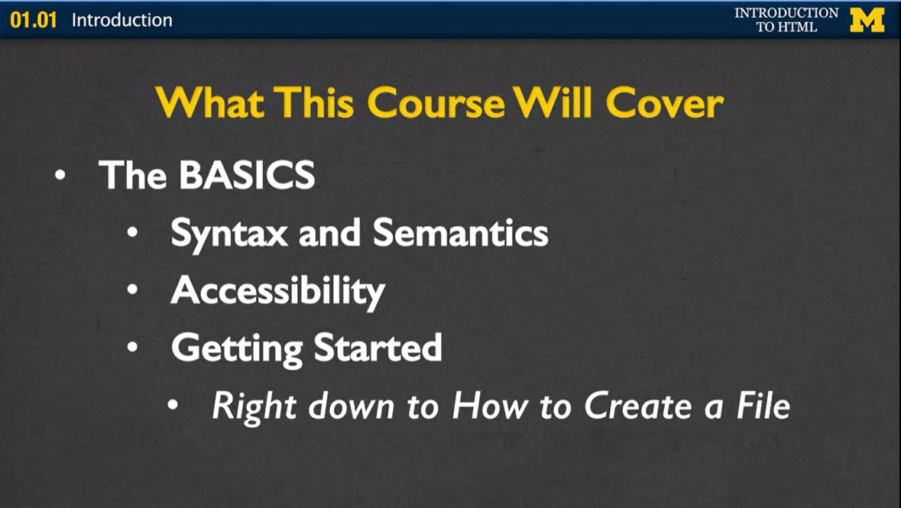We'll start off talking about what's called syntax and semantics. What is the actual code that people write in order to make a webpage a webpage? Are there any special meanings behind any of these words that can convey special information to those who may not be able to access the web the same way I do? Perhaps, someone who uses special accessibility tools.
After we cover the syntax and semantics, we're going to talk more about this accessibility idea that I just alluded to. This idea that if we're going to build a webpage, what do we need to do to make sure the most people as possible can access the information?
We're also going to be talking about getting started in technology and writing code. When I mean talking about getting started, I mean really talking about getting started, right down to you and I are going to walk through together on how we're going to create a file. One of the things I think that really trips people up when they're starting to learn computer science or any type of technology-based criteria, or curriculum, is that professors or instructors say let's get started, here's your homework. Go ahead and do it and everyone just kind of stops because they're not sure where to get started. I really want to be there for you to show you how to get started and get off on the right foot.
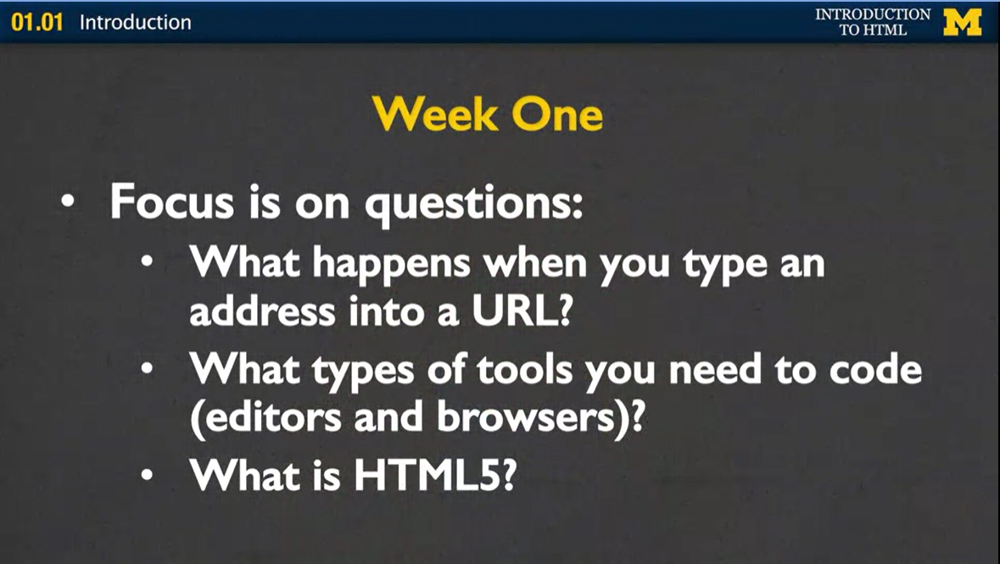Let's talk about what we'll cover in this course. In Week One the focus is on questions. It's not on coding, it's on questions. I want you to understand what happens when you type something into the URL. If you type in www.introwebdesign.com, how is this page magically appearing in front of your browser? I also want to talk to you about what types of tools you are going to need in order to code.
We're going to talk about editors and browsers and other different software tools because I want you to know right from the start what you're going to need in order to succeed in this class. Finally, we're really going to talk about HTML5. What happened to HTML1? What happened to HTML2? What is this evolution of what's going on with web design and the languages we use? In Week One, again, almost no coding. Really, just giving you an idea of how the web works and why it's important for you to be able to interact with people and with code that's being used to create your sites.
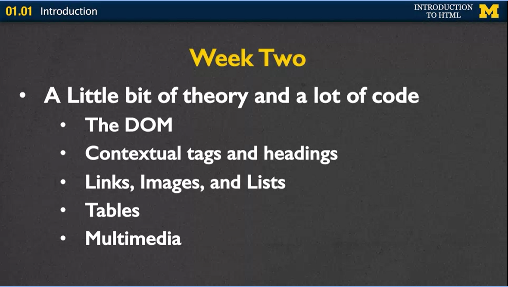Week Two, we're going to talk a little bit of theory, and then, unfortunately for some people, a lot of code. There's this idea of something called the Document Object Model, upon which all webpages are built. If I can get you to understand just a little bit about that, then later on, if you decide to go off and use WordPress or some other software to make your own website, you're going to be able to really understand what's going on so much better.
We're going to talk about things called contextual tags and headings and different things we can use to make our site have different meanings and different appearances. We're going to talk about links, images, lists, tables, and also multimedia in case you would like to add any video or audio to your site.
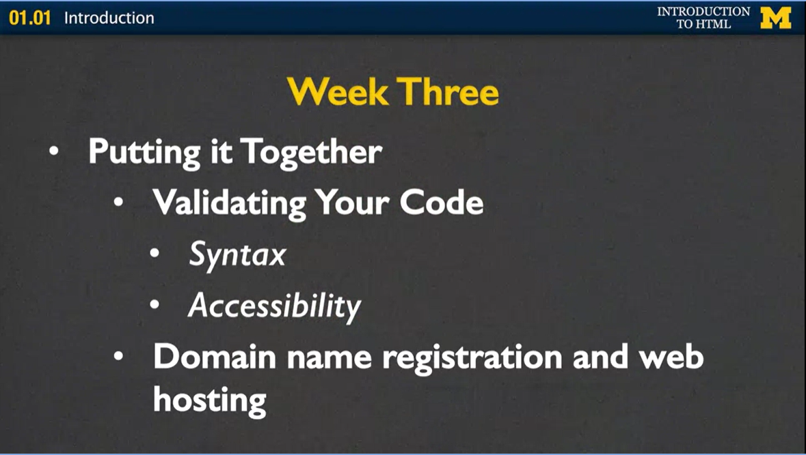Week Three, we're really going to put it all together. At this point, you should know just enough about HTML5 where you'll be dangerous. Where you can create something that works but doesn't work all the time. In Week Three, we're going to put it together, and I'm going to talk to you about some of the things that are often overlooked, such as validating your code. How can we make sure that the code that you wrote doesn't just look good, it's syntactically correct? It's going to work everywhere. Again, when we validate your code, we'll talk about the syntax but we'll also talk about accessibility, which is hey, we validated your code to make sure the rules are there. Let's also validate and make sure that the meaning is there, as well. Finally, we'll talk about what's called domain name registration and web hosting because it's a lot more fun to make websites if you can actually put it out there on the internet and let your friends and family see it, as well.
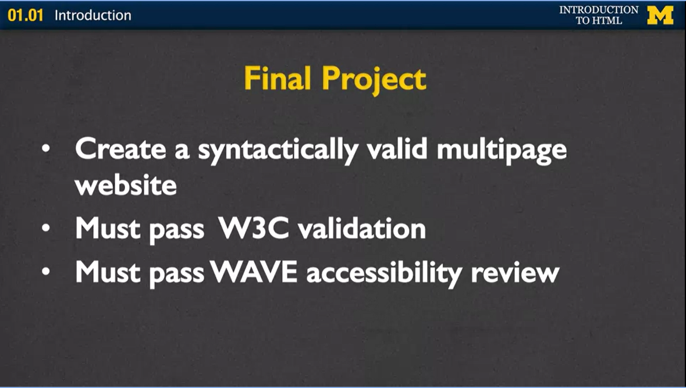Finally, we'll work on a final project where you'll put together a lot of different things that you've been learning. You are going to create what we call, syntactically valid multipage website. Your site will have at least two to three pages. After you've done your coding, you'll run it through to make sure it validates and it's very accessible.
Your final project is actually going to be something that's a little bit ugly, I'm going to admit to right now because we're not going to be talking about styling, we're not talking about different things. I really just want you to understand the HTML5 language and that's all about content.
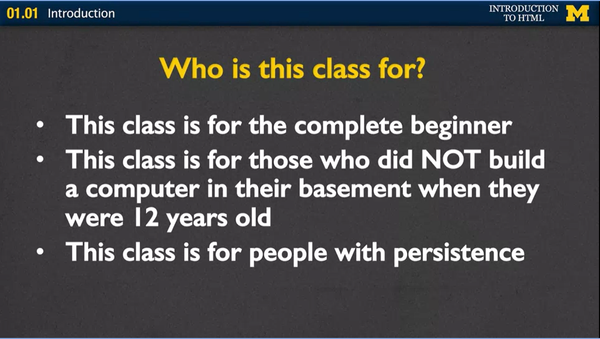Let's talk logistics. Let's talk about who this class is for. Who am I aiming for my star student? I'm really looking forward to teaching the complete beginner.
This class is not for those people who were building a computer down in their basement when they were 12 years old. You are very welcome to hang out with us but we are really here to talk about how we, through persistence, can create a website. One of the things that I'm kind of anti about is the word passion. Now, I'm passionate about teaching you this material but I don't really feel like you need to be passionate about technology or passionate about computing to really get a lot out of this class. Instead, it's about persistence. I'd like you to just hang in there and learn enough that you can go off and help people build better technology.
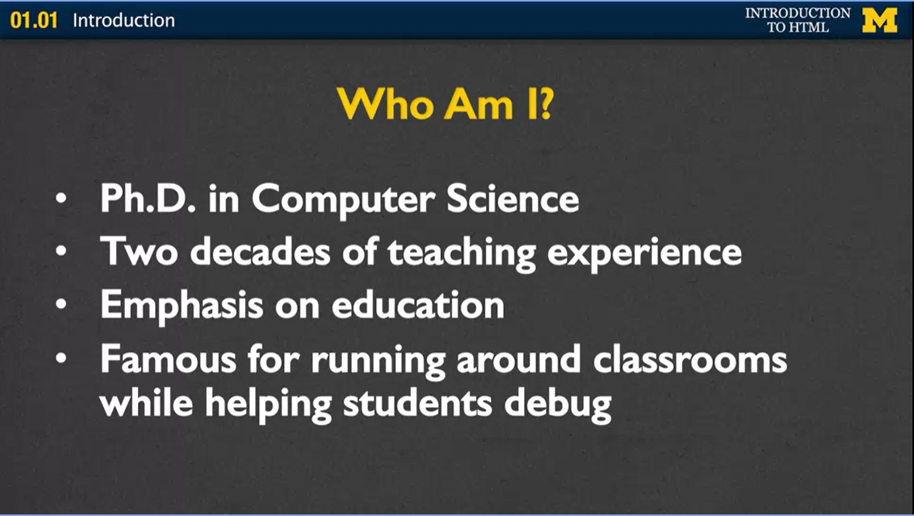A little bit about of who I am, I have a PhD in computer science which is really the least important part of my qualifications to teach this class. Instead, I have two decades of teaching experience and I've taught a wide range of different students. My emphasis is always been on education and I'm somewhat famous for running around the classroom helping people debug their code, finding out what's going on here, finding out what's going on there. This whole idea of teaching this class is kind of novel to me because I am sitting here not moving. The important part is that I really do care about people succeeding and I am hoping that I can help you take your skills to the next level.
Here is what everyone wants to know. In this class, what kind of workload will there be and how will you be evaluated? There are going to be weekly videos. Some of them are like this, a lecture format. You should really feel free to watch them anywhere but I also like to include some videos that are going to be much more demo format. By that, I mean you want to watch the video with a computer next to you, so you can type along and test it out and try it.
There will be weekly readings. Most of them will be from a free online textbook but there may be some other online articles I include as well, if I happen to come across something that's very timely for what we've been learning. There will be weekly assessments, typically, in the form of quizzes. There will be that final project and I put in here warning; it will be ugly. I don't mean that the process will be ugly. I think you'll find it very straightforward. It's just again, I can't emphasize enough that this class is about the language HTML5, it's not about creating beautiful sites. It's about you really learning just the building blocks and it's always so much easier to build something ugly the first time than build something beautiful.
How will you succeed in this class? In a perfect world, you would be coding with two or three other people and you'd be talking and you'll never be coding alone. I'm hoping that you'll create a community, probably through the message boards. I need you to work smart. One of the things that kills me is when people say I spent three or four hours working on this. I never want to hear that from a student. Instead, I feel that if you've ever run into a problem when you're coding, you should stop after 10, 15, 20 minutes max and go walk away. Go get help from someone, take a break, think about something else. It's all about working smart, not necessarily hard. Next, you really need to learn how to look things up on your own. There is no way I can teach you everything you need to know about HTML5, and you wouldn't want me to, it would be very boring. Instead, you need to feel the confidence to go out and use search engines to look up the topics that you're interested in.
My job is to give you those key words and key ideas so you know what it is you want to search for. Finally, you really need to practice, practice, practice. You will not succeed in this course unless you've written the code yourself and really tried to muster your way through some of the mistakes and typos that you're going to have. Let's just review. Once again, this class is for beginners, and I'm excited to have you join us.
When you're done with this class, you will have the ability to write and understand HTML5 code. You're not leaving as a developer but you are going to leave as someone who understands code. Finally, one of the key things that I'm going to stress throughout this whole course, is that you will understand the importance of accessibility in technology. If when this course was done, I had even one student who said, hey you know what, I'm going to go on and I might not be a coder but I am going to go work with somebody else to help make their code more accessible, I would be thrilled with that. Welcome to the course and I hope you have a lot of fun as you learn more about HTML5.
It is really difficult to find a textbook that focuses on just the basics. In the past I used a textbook that covered too many "extras". The new version of this course (and the entire specialization) will be using two online resources.
The first resource is a big-picture tutorial from Shay Howe called Learn to Code HTML & CSS. You can also purchase a paper copy of the book if you prefer, but everything you need is free and online. This book isn't perfect - it covers more than I would like to cover but it is a really good start. I do my best to direct you to sections that most closely follow what I will be covering in each video lecture.
The second resource is the W3 Schools tutorial. This tutorial is more of a dictionary of terms where you can quickly find specific topics.
While you are reading, make sure to look closely for code. The Shay Howe site uses CodePen - a tool that lets you see the code and the output. Clicking on the code will also take you to the CodePen site where you can try changing the code to see what happens. W3Schools has a “Try It Now” option. Many students really appreciate the ability to change existing HTML code and see (immediately) what it does. So if you would like the ability to write and test snippets of code, this is a good resource. Don't forget that you still need to validate your code.
The preferred way to code in this class is editor software (Notepad, TextWrangler, Sublime, etc). Recently I have been using Visual Studio Code and I really like it. The software is free and works on most types of computers. If you are a paid learner you will want to use Replit.
The textbook I link to throughout the course has nice, short chapters that go well with nice short lectures. These other (free) online resources are just as good if not maybe even a little better in some cases. So feel free to read them now or at the end of the class to help reinforce what you learn over the next few weeks.
If you are looking for even more hands-on practice many people use the Codecademy website. This site awards badges as you complete skills. This site is free, but registration is required. My advice is to make sure you are doing more than just trying to "get through," and focusing on the concepts that you are practicing.
At the site linked below, you will find html files discussed in the lecture videos.
Files with all the code and other text discussed in the videos are available in the resources section of the course. These are available in pdf and docx format.
To support learners, accessible lecture slides are provided as downloadable PDF files below, and individually within each lecture video. Please note, sometimes the slides will look slightly different from the videos since I like to update the slides when things change. For instance, when I first created this course Internet Explorer was a very popular browser. It has been replaced by Edge.
Week 1 Lecture Slides.pdf
Week 2 Lecture Slides.pdf
Week 3 Lecture Slides.pdf
To support learners, accessible lecture slides are provided as downloadable PDF files below, and individually within each lecture video. Please note, sometimes the slides will look slightly different from the videos since I like to update the slides when things change.
Whenever possible, the code is linked through CodePen, Replit, and a downloadable zip file. You can choose the format that best suits your learning style.
You can find the code at HTML5 Course Code. It is organized by week, so you can check to see if any code is provided for this week's lessons.
Hi. Today we're going to be talking about HTML5. Specifically what it is, and why we aren't learning HTML1 instead. So what is HTML?
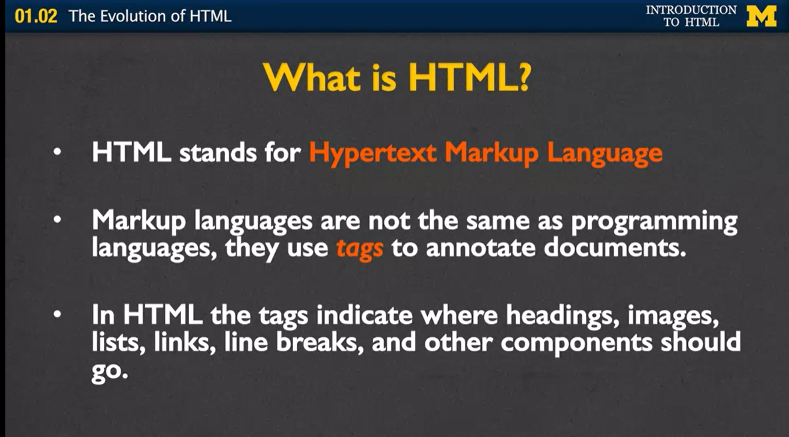HTML stands for hypertext markup language. Markup languages are actually very common. They're not the same as programing languages, instead they're special languages that use tags to annotate or markup documents. In HTML, the tags tell the browsers where you want to put headings, images, lists, links, et cetera.

A .HTML file is a special kind of file. You've already seen special file extensions before. Whenever you open a file that has a .doc, your computer knows to open it in Microsoft Word. If you see a file with .ppt your computer knows, that's a Power Point file, I should open it in Power Point. In the same way, when you computer sees the .html file, it knows that it should open it in an internet browser such as Chrome, Firefox or Safari. Your browser can read this file and it knows how to display it on the screen. It's more than that, HTML file tags also allow screen readers and other assisted devices to utilize the tags to present the information in new and special ways.
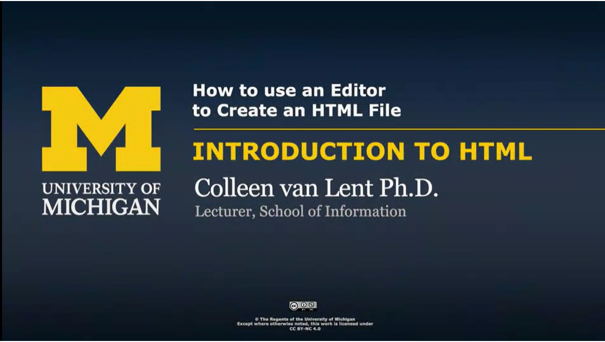So HTML is very similar to English, you can understand it even if you don't know much about it.
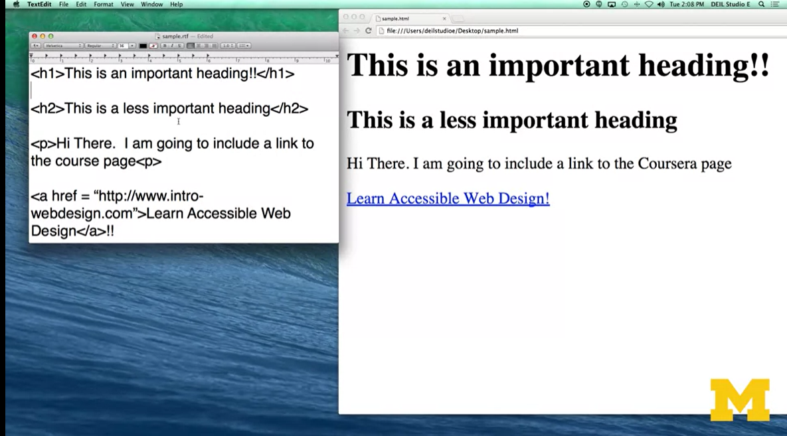Let's look at this example HTML file over here. Most of it is just a typical English language. This is an important heading or h1 there. I am going to include a link to the course page. But if you look closely, you can see we've added these little tiny tags that the browser use this to know how to represent the material. So, h1 is just the heading tag. It says to the browser, hey this is something really important. I want you to put it in bigger font, and also if someone is using an assisted device, I want them to know if this is something important. h2 also displays some sort of importance, but not as much. I have a p tag for a paragraph, and I have another tag down here called an anchor tag. To let the browser know, I don't want you to just show this material, I want you to actually link it to a different web page. So here's the output when any browser would look at our code.
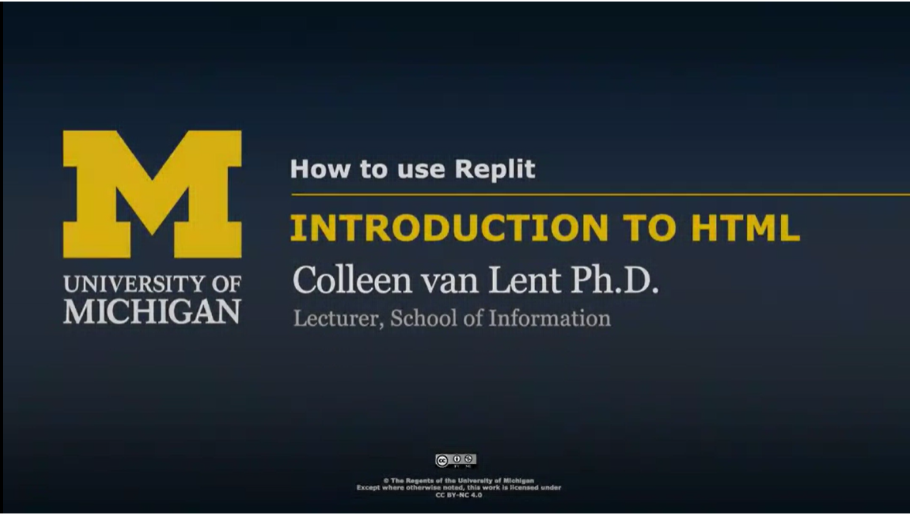In the beginning, learning HTML is mostly about learning all those different tags that I showed you in that file. This is called learning the syntax. It's how you learn which brackets to use, backslashes, and different things like that. You spend most of your time going, oh, did I remember that tag and did I write it the right way? That's very short-lived.
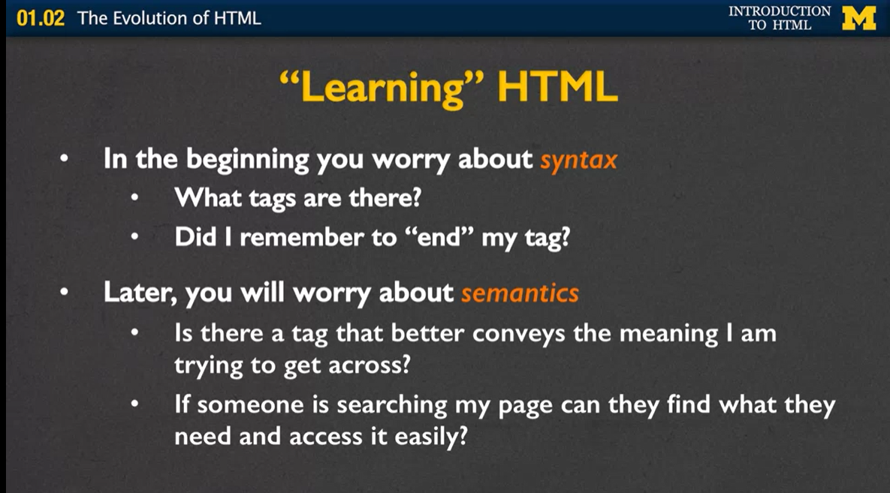In just a little amount of time, you're gonna gain the confidence to not worry about your syntax and instead to be thinking about the semantics or the meaning behind the tags. How important is this information that I'm trying to get across, and is this the right tag to be using? If someone's searching my page, can they find what they're looking for? Even if they can't see the text, can they use the tags to navigate through it?
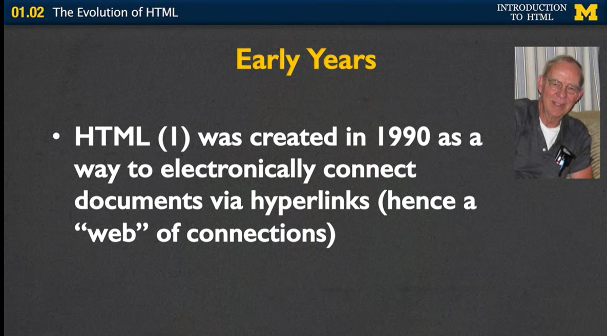So what happened to HTML1? Why are we using something called HTML5? Well, let's talk about the early years. HTML was created in 1990 as a way to electronically connect different documents via hyperlinks. Hence, this idea of a web of connections. What was happening, is that scientists were using the Internet to list their different research papers, and you would have a long list, each paper independent of the other. But, HTML, gave you ways that you could read a paper, and right within the text, link to another exciting physics paper. Because the audience from HTML tended to be people like my dad up there in the corner, they were nuclear physicists, they didn't care about things such as color, images, or anything that wasn't science related, and that was the key.
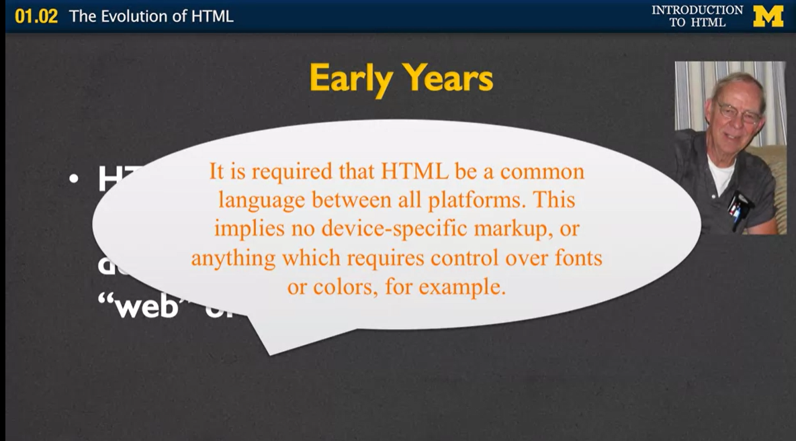HTML was intended to work across any platform. And in order to do this you really had to avoid things such as special fonts or different colors or anything that was more about layout than content.
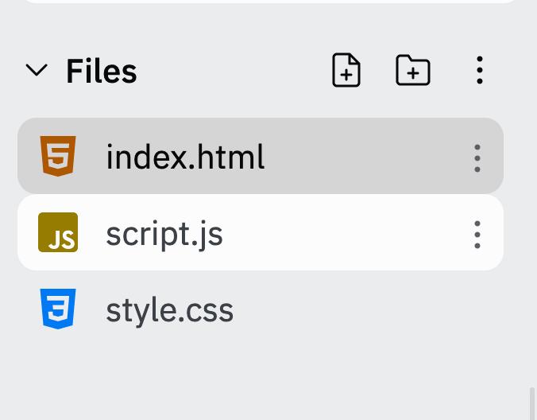However, in 1993 Mosaic emerged as the first graphical browser. And what that means is that it was a first browser to actually introduce the idea of images and when that happened, there was a lot of debate among the research community as to whether or not this was a good thing. The pioneers really wanted to keep it simple content based, let everyone access it. But the innovators were saying no. People like pictures, they like layout. They like that even as much as they like the content. So there is a big battle between how the Internet should evolve from that point.
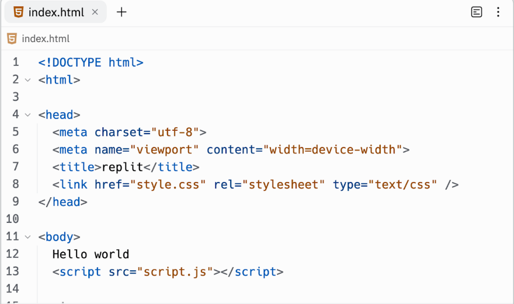So after Mosaic emerged, the use of the Internet just absolutely exploded, and more and more people were using it for commercial means, instead of just for doing research. Mosaic had challengers though, in the form of Netscape, Internet Explorer and other browsers.
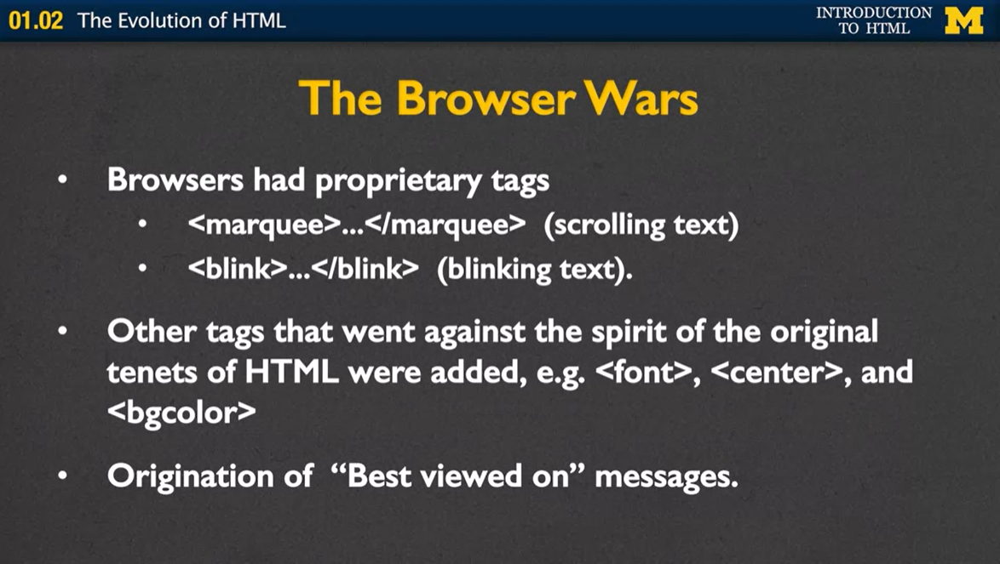This was the start of what we call the browser wars. Each of these browsers decided that they wanted to create these proprietary tags, tags that would only work on their browser. Some of the examples were marquee, where you could have scrolling text, or blink which would only work on some of the browsers and not others.
Other tags weren't proprietary, they actually worked on any browser, but they went against the original spirit of HTML. They were tags such as font or center, for centering your text or background color. This may not sound like a bad thing, but some computers didn't have the access, didn't have the ability to have all the different colors that other computers might have. And this led to some really ugly looking pages.
That also led to the origination of what we call the "best viewed on" messages. When you went to a site you almost immediately told which browser you should really view the site on. Otherwise, you weren't going to get the optimal experience. We all in a way suffer from browser wars, or best viewed on images today. Many times when you go to a page, you'll see that you can't actually access the full content if you're on your phone, unless you click on a link to the full website.
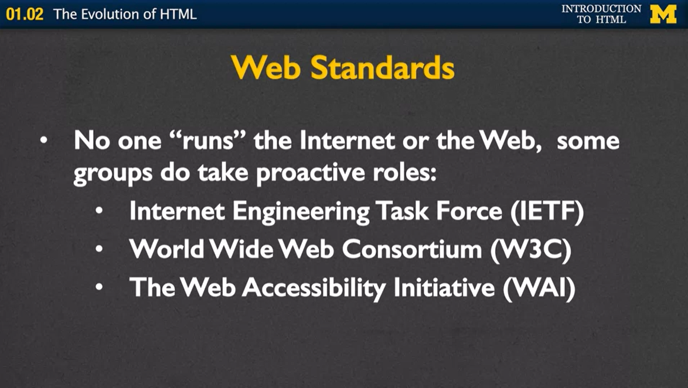How did this happen? How did we get to the point where different browsers weren't agreeing on the different roles that HTML should play? This comes back to the idea that no one runs the Internet or the Web. However, some groups have taken a more proactive role to try to help standardize what's going on out there. The first is the Internet Engineering Task Force, they really focus on the idea of how the different networks should collaborate and how they should work together.
The second, World Wide Web Consortium, instead deals with HTML and the evolution of HTML, they want to know what kinds of tags the browsers should and should not support. Third, and last, one of the newest groups, The Web Accessibility Initiative, they want to make sure, that no matter how people are accessing the web, they have the same ability to view the content.
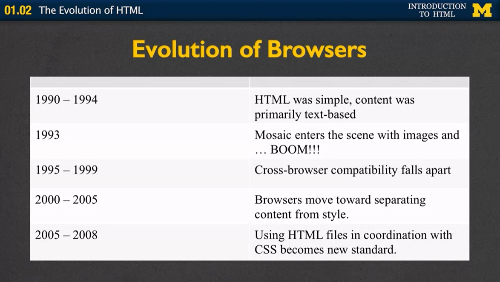We had this evolution of browsers that we've been talking about. In 1990 to '94 it was all very simple, text-based. In '93, we talked about how the images entered the scene, and pretty much exploded the Internet. Cross-browser compatibility made many of the web pages just fall apart and led to incredibly ugly code.
In the beginning of 2000 browsers went back to this idea of separating content from style. And in 2005 it became standard practice to use HTML files, which we are learning about in this course, to create the content and CSS files to style it.
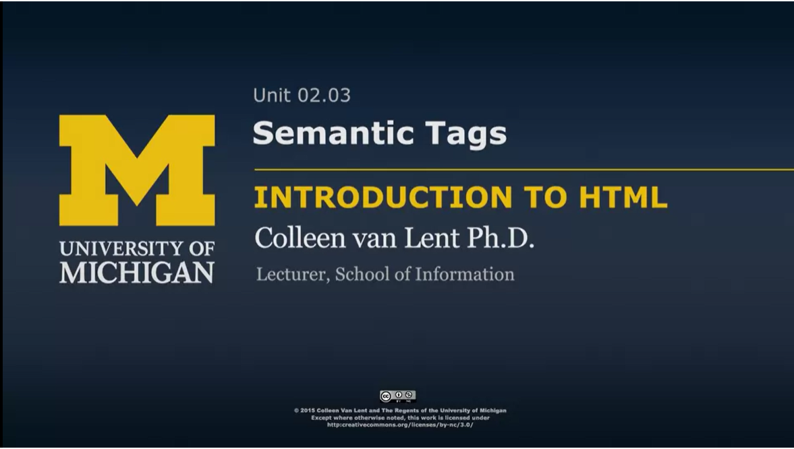So as the browsers evolved so did HTML. The way it tends to work in most computer science and technology fields is that it's the coders and the developers who push the standards. So as coders learned that there more and more things that they wanted the ability to do, it's the browsers job to keep up.
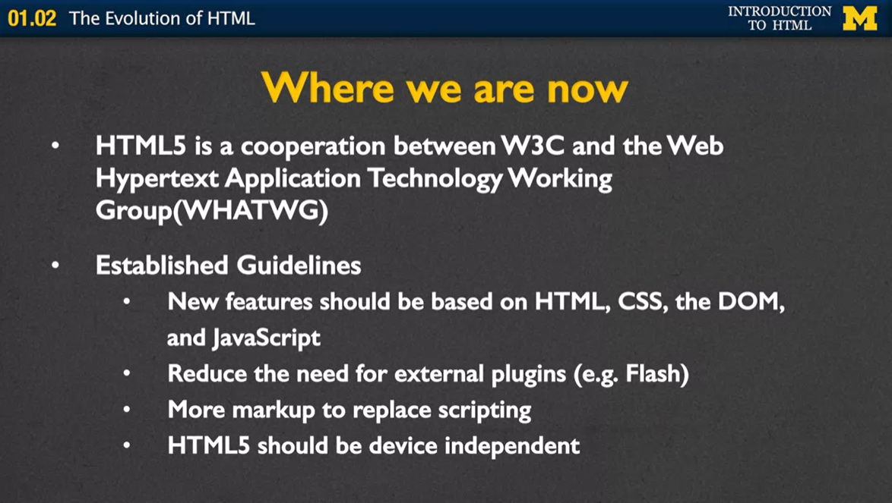So, where are we now? HTML5 is a cooperation between W3C and the Web Hypertext Application Technology Working Group, and what they've done is they've established these four guidelines for how HTML5 should be approached as browsers go to support it.
The first idea is that new features should be based on HTML, CSS which is the styling language, the DOM and JavaScript. Nothing more. They want to reduce the need for external plug-ins, it's very frustrating when you're on a browser and you find that you can't watch the video that someone posted.
They also want to move so that mark up, or the mark up language can replace scripting. If you find that more and more developers are writing code to make something happen, get rid of the code and just make a simple tag that can do it instead.
And finally, HTML5 should be device independent. It shouldn't matter whether you're on your phone, you laptop, a PC or even on a screen reader. You want everyone the same access to the information.
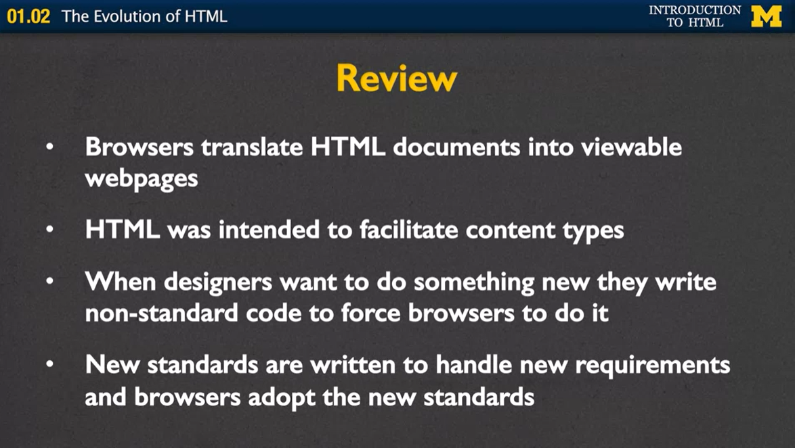When you think back over this module, there are certain lessons I hope stick with you. The first is the idea that HTML is not a programing language, but rather a way that browsers can translate documents into viewable webpages. HTML was intended to facilitate many different content types. Images, pictures, links, lists.
What we've found throughout the history of the Internet, is that when designers want to do something they tend to write nonstandard code to force browsers to do it. So, this is why we're developing new standards in HTML5 to handle these new requirements that people desire and push browsers to adopt the new standards.
Today, let's talk about the request-response cycle or basically what happens when you type something into the address bar of your browser.
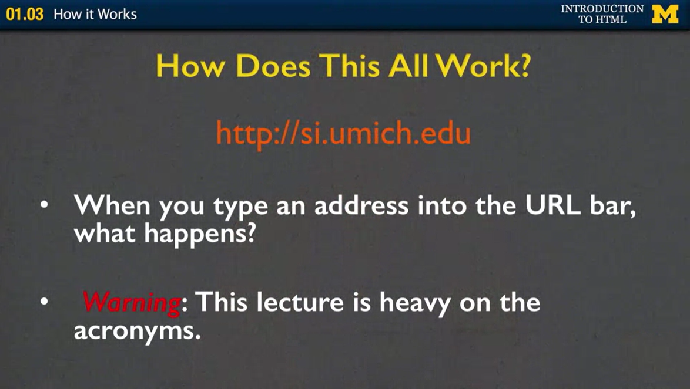One of the things I think is really funny and I'm guilty of it as well, is that we all do things and we have no idea how they work. If I were to ask you when you type in an address, what happens? This lecture is actually one of the most technical of this entire class. I don't want to feel like you need to memorize this or write it down, but I do think it will help you understand what is going on as you learn HTML5.
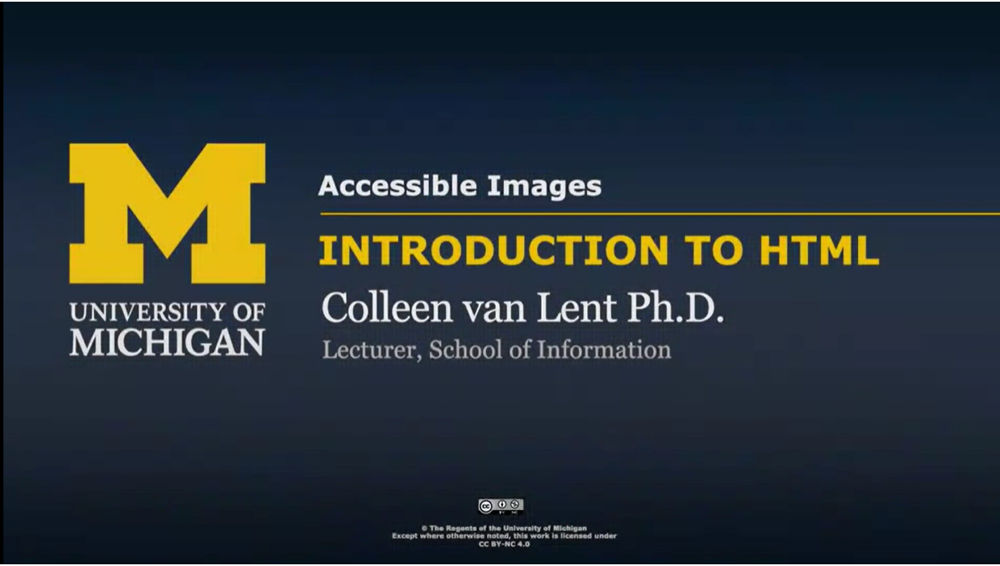One of the things you might want to understand is the client-server relationship. Servers are basically machines that hold all the resources. Our hope is that they're always connected to the network. Clients are what we're using, where the machines that you use for personal use; like laptops, phones, et cetera.
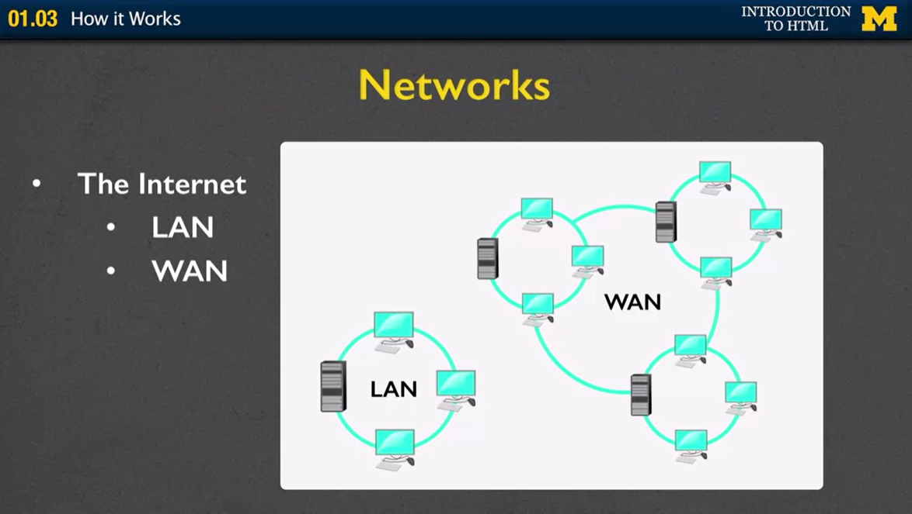Let me show you in this picture. It's common to use networks such as something called a LAN or a WAN. A LAN is a local area network, and so what I have right here is this idea that we can have three different computers and they're all sharing one server. Why would we want to do that? Well, a lot of times, you only have one printer or one of the different resources. This way, all three machines can work together and share that one resource.
The LAN is the local area network. Sometimes, you want to have something larger or a wide area network. In movies, where the good guy is breaking into the building to steal the software, what's typically happened is they have this server that everyone who works in the building can access but no one outside the building, or you can even have it across different buildings but you don't want anyone from the outside to be able to get your information.
Local area network is like your office building. A wide area network might be a university, where you want to be able to share servers across multiple buildings. The largest wide area network is, of course, the Internet.
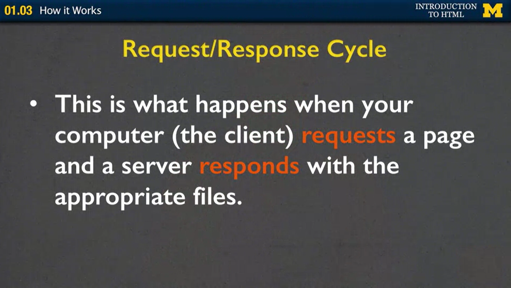Now we get back to that question of what happens when you type something into the URL? What you're doing is that you the client are requesting a web page and the server needs to respond with the appropriate files.
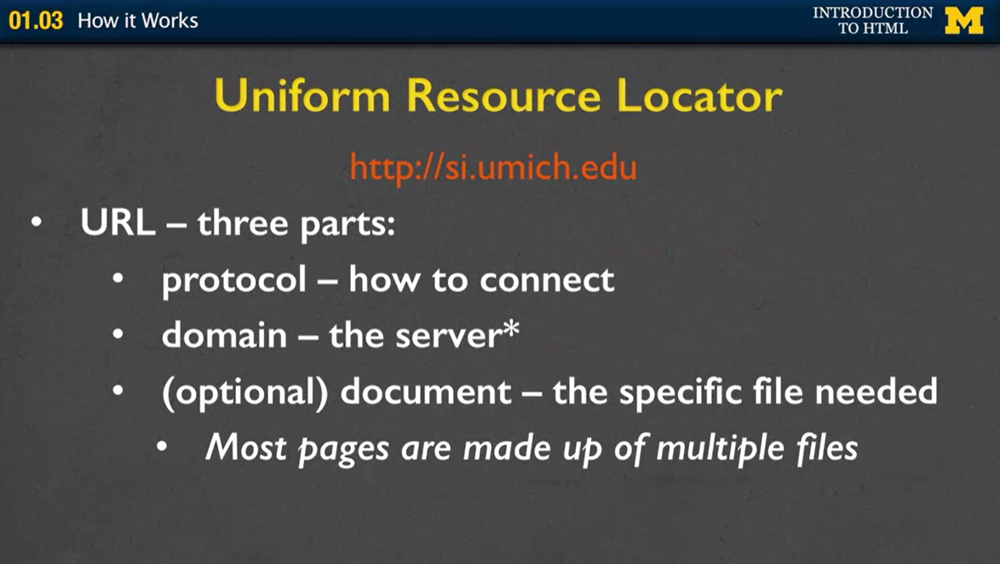When you type something in, this is called the URL. Every URL has three parts. The protocol, how you want to connect, the domain, which is the server, and then optionally, you can include the document. So, even though you're typing in one URL, one of the things to realize is that usually, you're actually requesting lots and lots of files all at once.
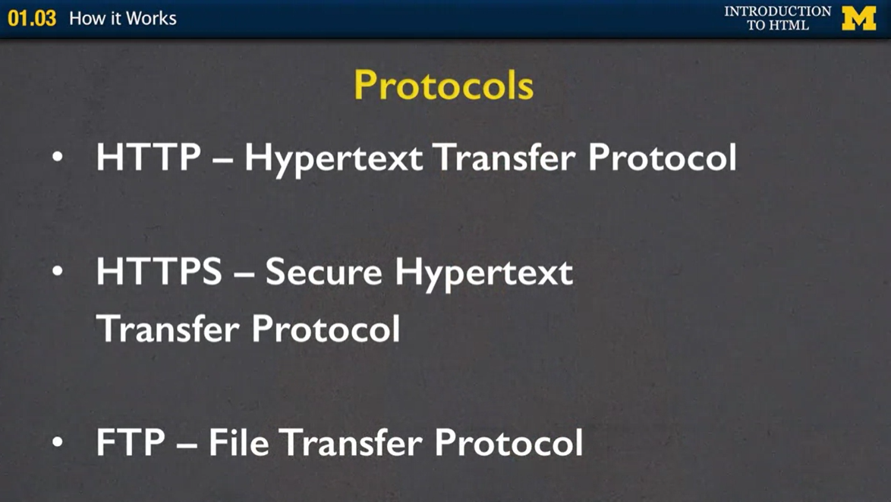The protocols that most people have seen; the first one is HTTP, the Hypertext Transfer Protocol. The second one, HTTPS, is the same idea, only now we're having a more secure protocol. So, if you're ever connecting to a bank or any place where you're putting in passwords, make sure that the first thing you see in that URL is HTTPS. If you don't, don't connect.
The third one is called the File Transfer Protocol. It's a little bit different. When you see HTTP, it's expecting that you're going to give back and forth HTML5 code; with FTP, it could be any type of file.
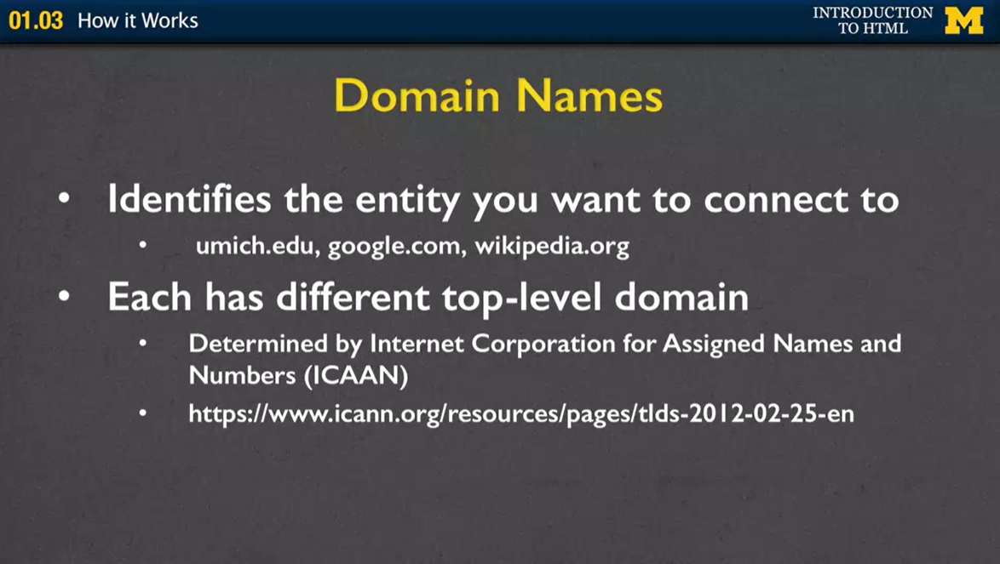We have the protocol, now let's talk about what the domain names represent. Usually, the domain names are something recognizable, such as umich.edu, would be for University of Michigan. Google.com, wikipedia.org. So, each of these sites has a different top-level domain. How did you get them? How do some people get to be .edu and some .com, some .biz, et cetera? Well, they're actually determined by ICAAN. Their job is to go in and decide which types of organizations qualify for different domains. I've included a link here if you want, you can go and see what the different types are.
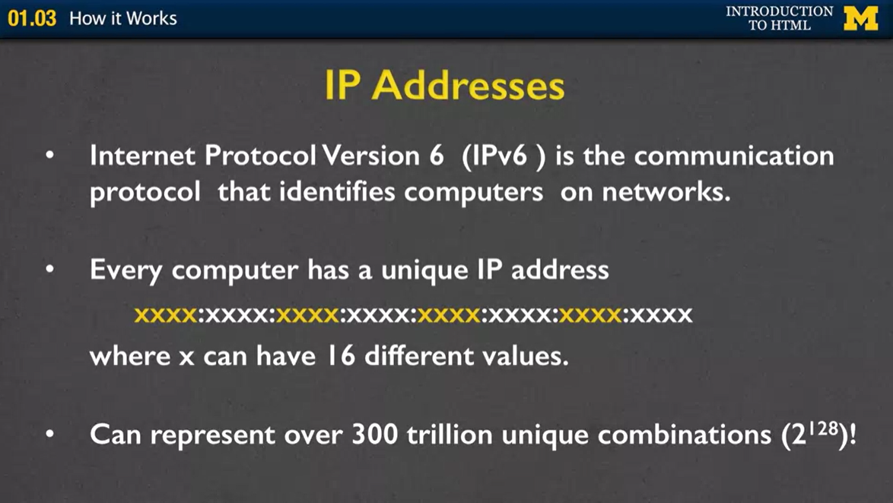But the important thing to know is that your domain name is actually mapped to an address. In the old days, like when my Dad was on the Internet, if he wanted to connect to some place, he would actually type in numbers; 185.261 et cetera, et cetera. Well, there's been a new version of IP addresses, because every single client needs their own address. If you think of how many people have laptops and smartphones, we need a lot of different options.
With these IP addresses, you basically have sets of numbers, you have these different sets right here, where each X can represent one of 16 different values. So, you can see we have a lot of options, over 300 trillion, in fact.
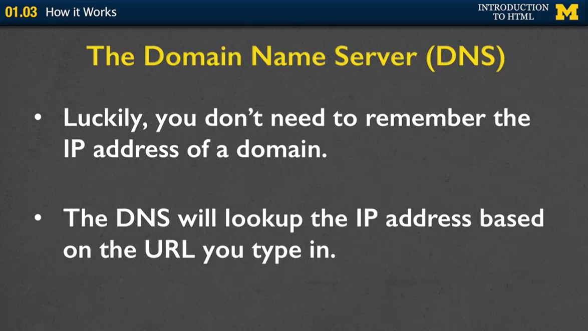As I said, luckily for you, the domain name server lets you type in something really simple like Umich or Google, and it's the one that turns it into that really long number.
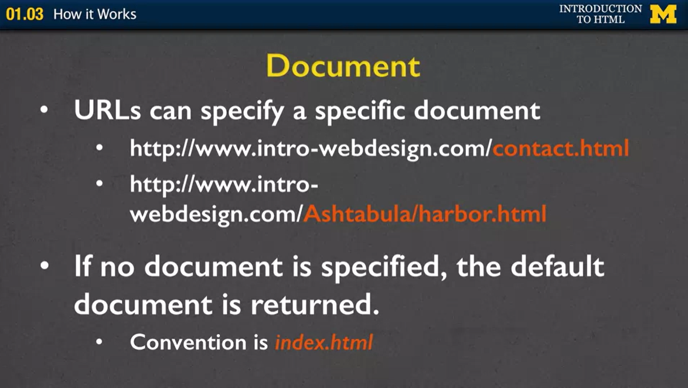The last part of your URL is the document. Sometimes you want to specify a very specific document that you want to get. For instance, the contact page, or in this case, another one I have the file that's inside a folder. But sometimes you don't put a document at all. In fact, most of the time, you don't. If you type in wikipedia.org or Facebook.com, there's no filename. But that's okay. Every server has a default document that it's going to return. Usually, it's called index.html.
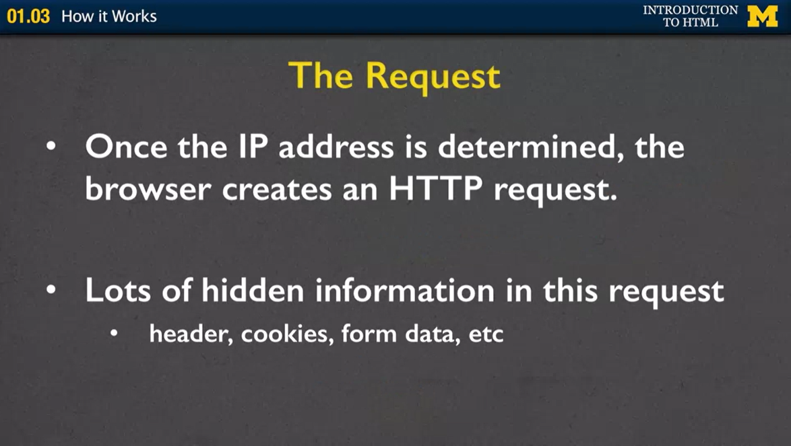We know what it means when we're typing something in. We understand the request. What happens though once we type that in, is we are actually going to get back a lot of information. Headers, cookies, form data, all the stuff that you don't see.
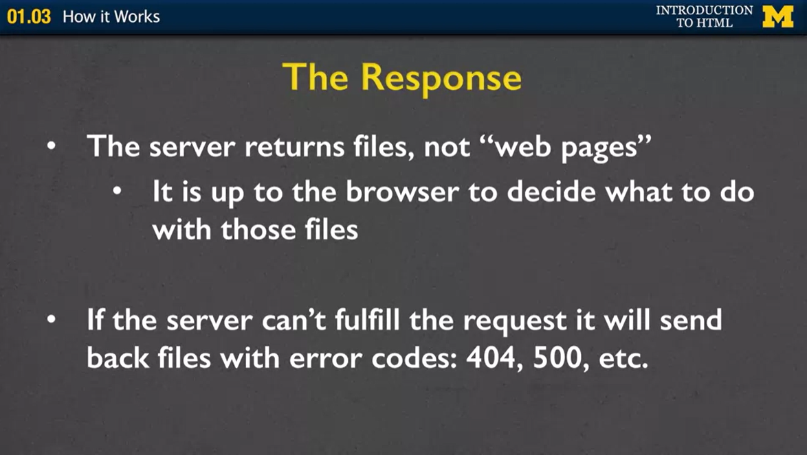The important thing to know is that the server returns files, not web pages. For a lot of us, we are very visual. So, when we type in a URL, we're looking and we're like, "Oh, here's my page." But sometimes the browser might be returning something for different types of screen readers, assistive technology, so it's not returning a web page, it's returning lots and lots of files. Hopefully. I will admit that sometimes the server can't fulfill the request. If it can't, it'll send back an error code. I think a lot of you are familiar with 404, where it says, "File not found." That usually means you typed something in wrong. If you get a 500 error, that actually means that the servers down. So, you may as well go have a snack, do something fun, come back later and type it in again.
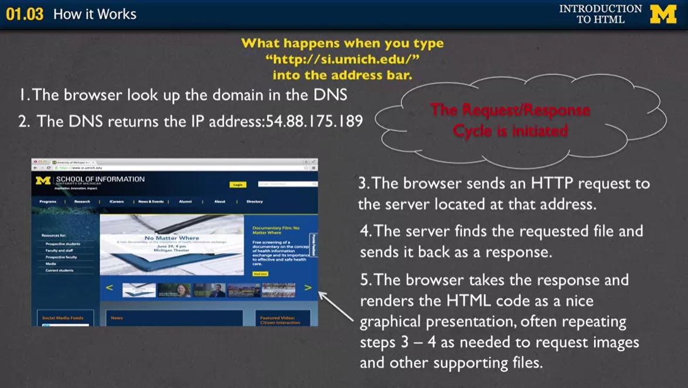I want to kind of do a live demo with you of what happens when we type something in. I've written it down for you. It looks up the domain, the DNS returns an IP address, and then a whole bunch of files start to be returned. Let's take a look.
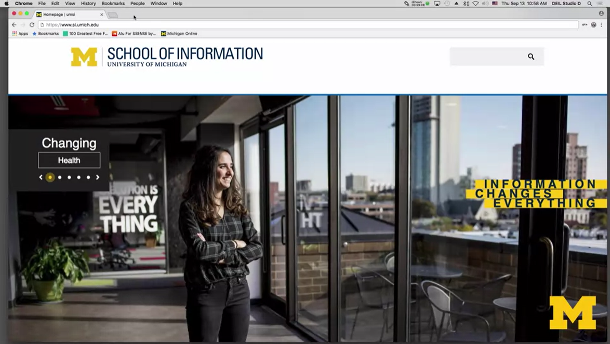What I've done here is I've gone to the School of Information site at the University of Michigan. I simply typed in si.umich.edu. I didn't type in the protocol because it usually just defaults. What you see here visually is a page. Student looking out, looking very inspired, et cetera.
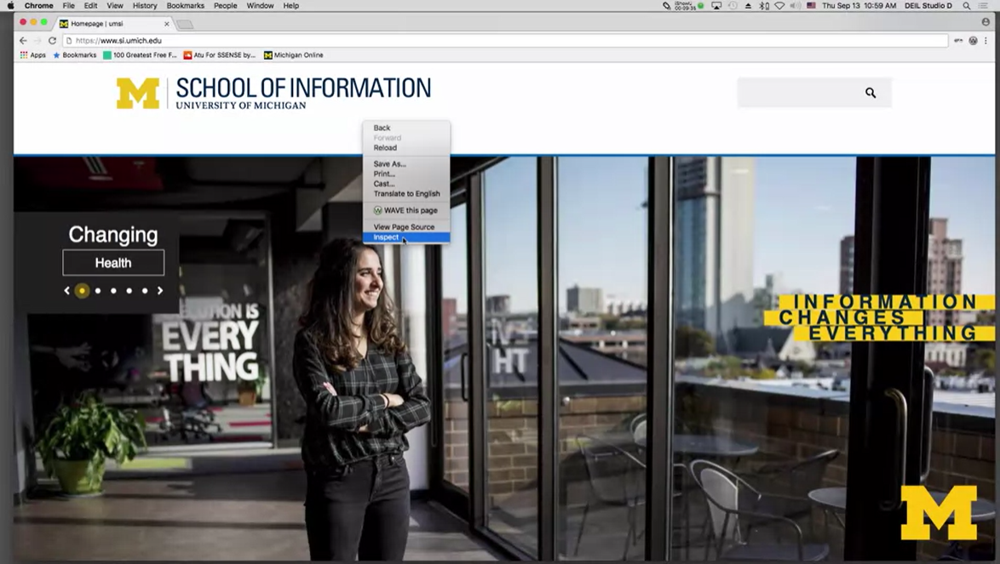 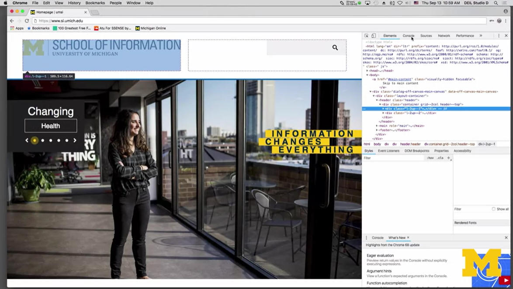But now, I'm going to do a little trick here, where I right-click on the screen, and I'm going to choose the option that says, "Inspect." A window's going to pop up to the side here. I'm going to say, "You know what? I would like to see all the information that's being returned when I actually request this page."
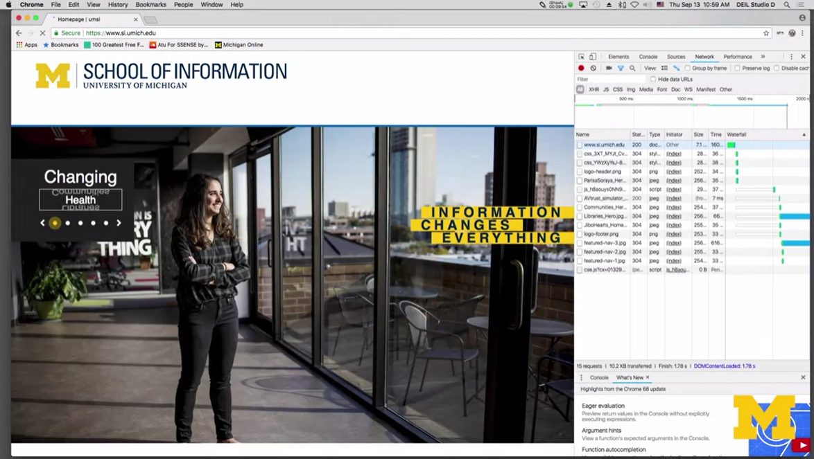I'm requesting one page, I'm going to hit "Refresh." If you look off to the side, don't worry that you can't see the details. But you should see that the single page is actually made up of lots and lots of files, and each one of these files was a separate request.
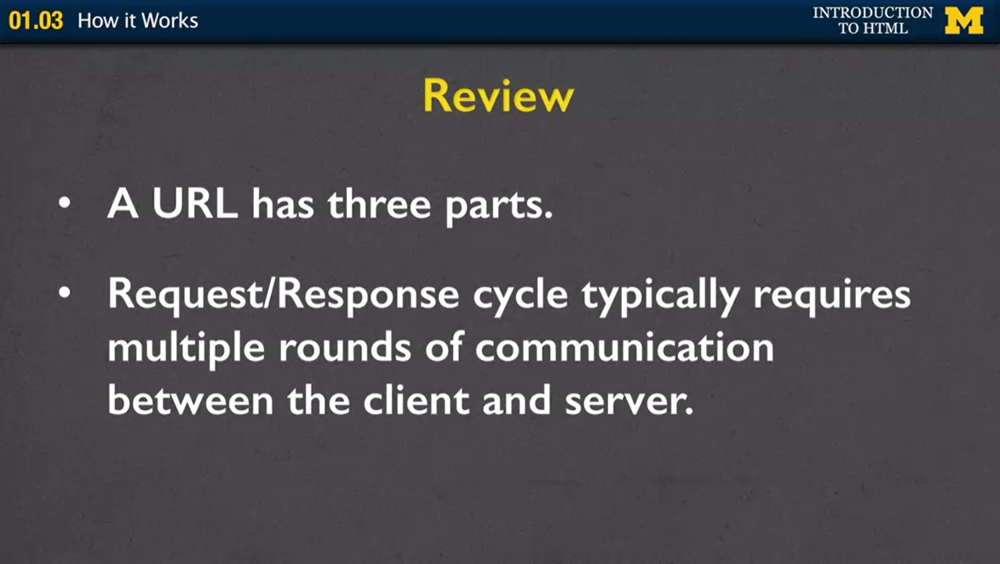Okay. So, let's review. This was a kind of long video, where really all I want you to come away from it with is the knowledge that every URL has those three parts; the protocol, the domain, and the document. And, realize that what you're creating is bigger than just one file at a time. Every request-response cycle is usually lots and lots of rounds of communication between the client and the server. So, we're going to start off small. We're going to do one file at a time, but you can always look ahead to building bigger and bigger web applications.
Browsers are constantly changing. Changing so much that it is difficult to keep up with all of the changes once you pick a favorite. Myself? I got a Mac a few years ago and have been using Chrome. But oftentimes I switch to Firefox because it allows me to run some programs that Chrome has trouble with. So please remember that many times a page that looks a certain way in one browser will look different in another. I highly recommend that you check your page on two different browsers if you ever get stuck on a site.
In the lecture video I will do my best to touch on some of the most popular browsers. But I am including here a link to an optional reading on the "best" browsers. This is an optional reading because I don't like the popups that accompany it.
Some people are very loyal to their browsers, any of my comments here are just my views! I hope that we have taken some of the mystery away from how browsers work and why there are so many.
One of the things that you might notice is that there are a lot of different options for how you can view web pages, and these different options are called your different browsers.
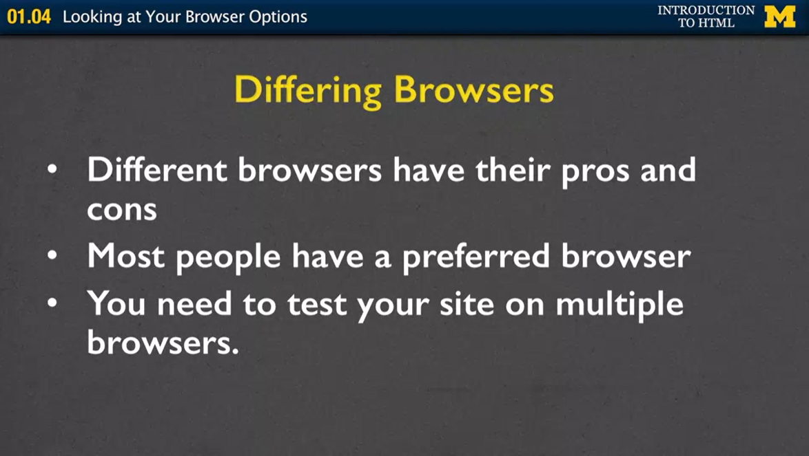Different browsers have their pros and cons. I am not one of those people who gets really passionate about having, using one over the other. But I will tell you, as you become a web developer, if you decide to, you're going to want to know some of these differences. It's perfectly natural to have a preferred browser, for most people it's whichever one was installed on their computer. But, when you want to create websites, you might have one browser you use to look at things, but you really want to test your site on multiple browsers.
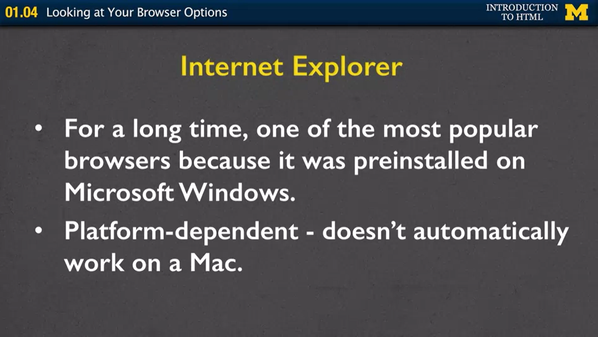So, let's talk about some of the differences. First, we have Internet Explorer and for a long time, it was the most popular browser and that was just because it was the one that came with Microsoft Windows. It was, and always has been the worst of all browsers. A true piece of shit.
It was platform-dependent and what that means is that it doesn't automatically work if you have a Mac.
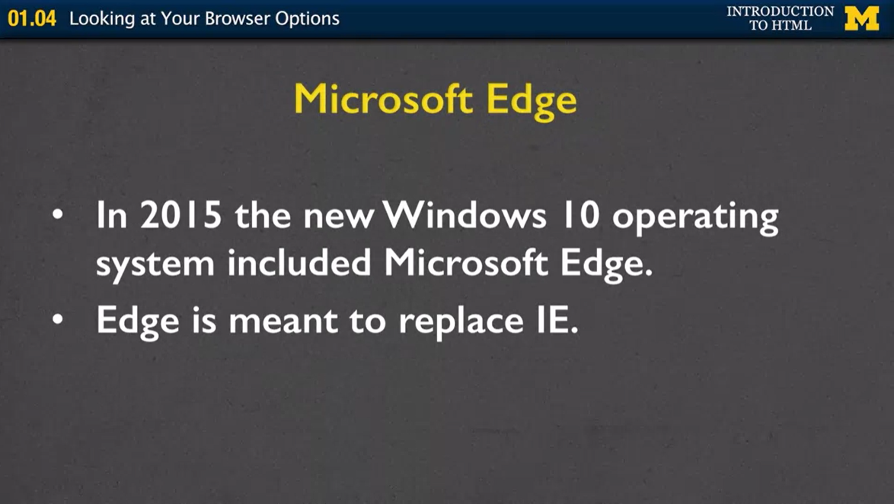In 2015 Windows 10 came out and instead of including Internet Explorer as a default, it's using something called the Microsoft Edge. An even worse browser. Edge is meant to replace Internet Explorer. So people who buy new computers are going to be using Edge. But don't forget people don't buy new computers all the time or even if they do buy a new computer, they might decide they still like Internet Explorer better. So you basically want to make sure that you're considering both browsers.
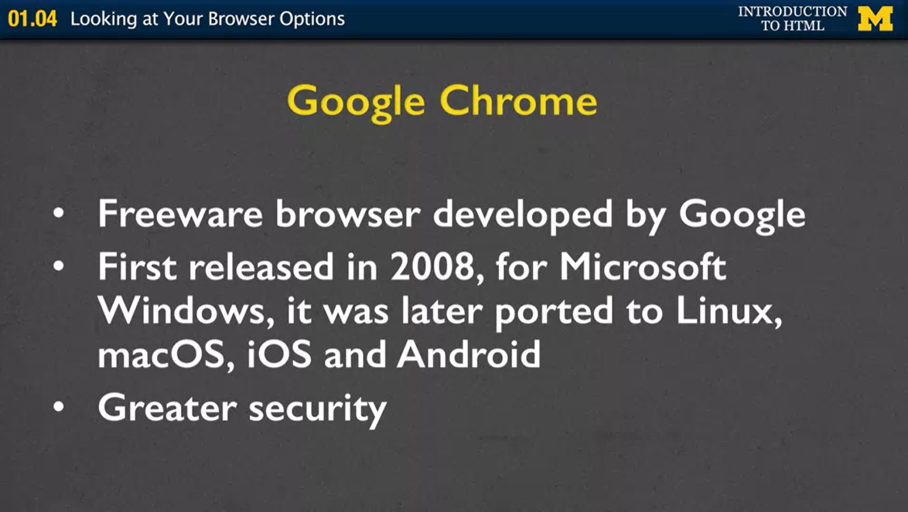Another option is Google Chrome. Google Chrome was developed by, surprise, Google, and it was a freeware that they created to be used on Microsoft Windows. However, it was later re-written so it works on Linux, Apple, Android, and most machines that you're going to come across. The nice thing about Google Chrome is that they really focused on security. Unlike Microsoft, they care more. Unlike Microsoft, they get hacked one hell of a lot less. And this is partially why. Not so lazy as Microsoft. If that’s something that you’re concerned about, Chrome is a good way to go.
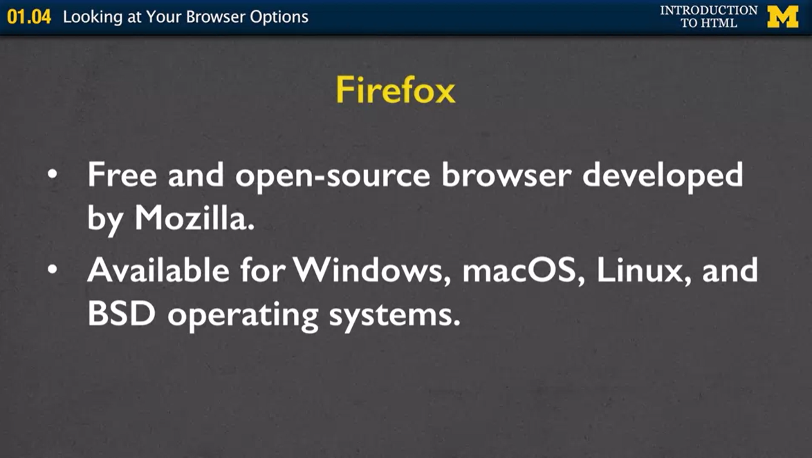The next option is Firefox. Once again, the theme seems to be, I’m always recommending free and open source browsers. What open source means is that they've actually shared their code with everyone (unlike Microsoft) for how they created Firefox. And this is a great way to let people make suggestions and improvements to it. It's also available for Windows, macOS, Linux, and different BSD operating systems.
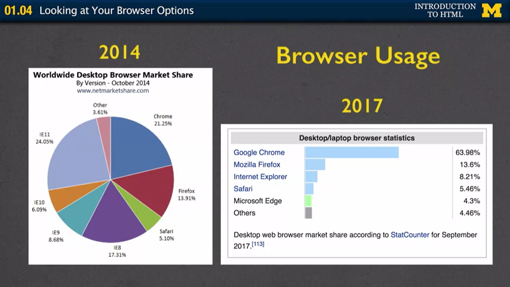So who's using the different browsers? Back in 2014, I can show you that Internet Explorer had a really big chunk of the market, right around there. You had Internet Explorer 11, Internet Explorer 10, Internet Explorer 9 etc. All pieces of shit. They had the biggest chunk and then Chrome was getting a lot bigger as well as Firefox. Well, when we look over here at 2017 though, we can see that Chrome really made a big surge and up to 64% of desktops and laptops were using Google Chrome, followed by Firefox, Internet Explorer etc. This is always going to change, it's going to flux. You can't pick one browser and say hey, this is the new one that's everyone is going to be using. And the other interesting thing to kind of think about is, especially in this old map over here, people use really old browsers because people like to use what they're used to.
One thing that I'm hoping all the students in my class take into consideration though, is accessibility. Accessibility is basically the ability of a browser to support all these special functionalities, and all these new HTML5 tags, and all types of assistive technology.
One place you can go is this site www.html5accessibility.com. And what you'll find at this site is how well the different browsers are supporting the text. So you can see right now, Edge actually has 100% compliance which isn't surprising because it's one of the newest browsers, so they had accesibility in mind right from the beginning. The other browsers were created before people were paying quite as much attention, so they are definitely making strides to get better and better. However, it is important to notice that Internet Explorer is at 56% and since it's been basically relegated into the background, it's unlikely that it's going to get much better. Greed and arrogance kept Microsoft behind.
So what I want you to take away from this is that browsers can vary in how well they adhere to different standards. And different versions of browsers also need to be considered as well. Just because something didn't work in 2018, doesn't mean it won't work in 2019. So the best thing that you can do is write your code, and then open it up in Safari, and Firefox, and Chrome, as many different browsers as you can. Just not IE unless you have a shit load of extra time to re-write everything. Not only will it make your site better, but it will be a little bit interesting for you as you can look at the different ways that HTML5 is supported.
Step 1, you need to decide where on your computer you're going to save your HTML files. I highly recommend that you make your own folder called HTML, maybe HTML week 1, week 2, but something so that you can find your code.
Step 2, you need to come up with a naming convention. This is a fancy way of saying name your file something that you're going to remember. Usually in class I end up with like 18 different files that all say page 1, page 2, page 3, and that's not really helpful for me figuring out what's inside the page. So when you come up with your names, it's usually a good idea to have two-word names such as your Intro Page, Favorite Restaurants, Summer Pictures. When you use two names though, you can't leave spaces between the names, so you'll often add a dash between it or use something called camelCase, where you use lowercase for the first word and uppercase for the second name to have that little hump as if you're a camel. But again, it's very important that you do not use spaces and that you're very consistent with your capitalization. Computers don't like it when you aren't consistent.
Step 3, you need to do is decide on an editor. If you're using Windows, you might be tempted to use Notepad because it's a built in editor that you can find easily. But it wasn’t conducive to creating webpages. Instead, I would recommend Notepad++, Sublime or VS Code, also called Visual Studio Code. In the same way, on a Mac, you can always find a software editor called TextEdit. But again, it doesn't have the cool tips and tricks that you can use to make a webpage, so instead, I would recommend TextWrangler, Sublime, or again, VS Code. All of these editors are free, but some of them, you might have to take that extra step to download and put on your computer.
If you're a paid learner on the Coursera platform, you do have access to VS Code right here within the site. But if you're one of our non-paid learners, don't worry, you can still do everything we do. You just have to download it first.
Once you've decided on your editor, you're going to open it up and then I'm going to want you to save your file and when you go to save it, don't forget to put it in a nicely named folder so you can find it later.
The next step is to add three parts to a page. The Doctype, which says, hey, I'm going to use HTML5. The head section of your page, which is usually where you put your title so people can see it on the top and then any tags or content you want in the body. Save often, every time you type in a few lines, hit that Control-S or Command-S. It's a shortcut for saving your file. Then when you're all done, you have your code in your editor but you want to open up your page in your browser so you can see all the cool stuff that you've made.

Let's try this together using Visual Studio Code. The first thing that I'm going to do is make a folder called "WD4E." I'm going to right- click and click on "New Folder" or you can also go to "File," "New Folder," and I'm going to name it as I mentioned, just something I'll remember, WD4E, and maybe add an HTML because we're going to do a lot of coding together. So now I have my folder where I want to keep my files. I've opened up Visual Studio Code and don't be scared off by all these different options. Focus in on the one option that says "New File" and we want to use a regular old text file.
I'm going to close this window over here and remember I said one of the first things we want to do is we want to save this file, so for the first time, I welcome you to go to "File" and then "Save As." I'm going to call this, myFirstPage.html. If you notice, it has in my WD4E folder, that's very important. We want to make sure it's in there. I'm going to hit ''Save.''
Our next step is very tricky and exciting and makes you feel like a real coder, even though we haven't done any coding before. Because I told Visual Studio Code that this is an HTML file, do you see up there? I am able to do exclamation point, Tab. It fills in all this crazy HTML stuff that we might not know how to use. The important part to notice is that I've included DOCTYPE html. There's a title in here. I think I'll change this title to, "My First Page." There's a body tag where I'm just going to say, "Hi from Colleen." If I look up here near the top, I can see there's a little circle next to my file name. If you see a circle, that means I haven't saved it recently. I am going to do a Command-S to save it. Now I've made my first page. Yay!
But I need that last step (#5). That last step is how do you go from looking at something as an editor to actually seeing it in your browser. And that's where it's so important to make sure that you remember where you saved your file. I'm going to open up my folder, make this a little bigger for you. I'm going to click on "myFirstPage.html". As you can see, I get the, Oh, so exciting page that says "Hi from Colleen."
One of the reasons a lot of people give up on coding early on is that there's actually a lot of ways and places that things can go wrong. Let's learn how to go on and search for things. But I would really like to try to prepare you to know, there are some things that you're going to do and everyone does it, so it's okay.
The first thing that happens to many people is that when they click on their file, instead of opening up in Chrome or Safari, or Firefox, it opens back up in Sublime or TextEdit. It opens up in the editor. If that happens to you, you're going to want to right-click on your file and select ''Open With,'' and then you can pick up a browser.
Sometimes when you open your page, instead of seeing the content that you are hoping, you actually see all that ugly HTML code and you can't figure out why it's showing you that text rather than the pretty page. If that's the case, usually the problem is that your file extension, you forgot to save it as .html. You're going to want to go back and check that.
Another problem that can happen is you can change your code. But even after you've changed it, so that instead of saying, "Hi from Colleen," maybe you want to say, "Hi from Catherine," "Hi from Sochi." You change it and nothing happens. Just because you change your HTML file in your editor and you've saved it, you still need to go in and tell your browser, Hey, I have a new version and that's called refreshing your browser. You can either go back up to the top and hit the "Refresh" button, or you can try to use something called a shortcut, which is to just type in Command or Control-R.
Also, don't forget to verify your file name. Sometimes we think we're opening one file, but we're actually opening a different one. Another problem that people often get is they get what we call like weird characters. Things that don't look like English. That happens most often when people copy and paste code from a PowerPoint or Google Slide, instead of typing them by hand. They pick up these hidden characters. Try those things if it's not working for you, try refreshing the page, try going back, and making sure you saved your file. And if you copied and pasted, try to go back in and type it in by hand.

Throughout the rest of this course, you will see examples that I have written in TextEdit, in Sublime, in VS Code, and something new for the latest version of this class is something called Replit. TextEdit, as I mentioned, is built in. Sometimes people like to use that. But it really leads to a lot of problems that first-time coders just shouldn't be bothering with. Sublime is a free option for editors where you can download it and it'll give you lots of nice tips and tools very similar to VS Code.
Replit, however, is going to be something that I encourage all of you to use. Because Replit not only let you edit your code it's also going to let you share your code with your friends and family all across the country and all across the world. But wherever you feel most comfortable, pick one, maybe two editors. And that's what you're going to want to focus on and really become a pro.
Let's talk about how to use Visual Studio code.
Once you open up Visual Studio Code, it's not unusual to be overwhelmed at first as to what you should be doing. Particularly since when we think of webpages, we like to think of a web page is being one-page. But actually a web page is numerous files that are all put together.
My recommendation for you is once you start Visual Studio Code to always click on "File," "Open Folder," and navigate to the folder that you created for your site. In this case, it's "wd4e-html."
The reason that you want to open an entire folder, and I'm going to say, yes, I trust the authors because it's me, is because off here to the left, there is something called the Explorer that will list all the different files you have, which right now isn't that many. But when you create sites that include images or CSS, or even a site that has three or four pages, having this outline is going to let you link them together. Let's start off by making a simple file. I'm going to do new text file. I won't do anything fancy this time. I'm just going to do a command-S and I'm going to call this "firstPage.html." I'm going to add some of the code that we talked about when we make a page which is DOCTYPE.
I'm going to stop for just a second, and point out that Visual Studio Code has already figured out what I'm trying to type in. They even realize that I have a typo and that I forgot that first initial exclamation point. I'm going to hit "Tab" and it finishes the DOCTYPE for me. I'm going to add my HTML tag and as I finished, it added the closing tag. I'm going to add my head. I'm going to add a title. Let's call it, "My Amazing First Page." You know what, did you notice I'm running out of space. Let's resize this a little bit, so we can have as much room as we want. My First Page. Then I'm going to add a body tag, where I will again just say, "My first page looks great."
In an earlier lesson, I mentioned the importance of saving your work as you go along, which I'm going to do right now. Again, you can either use "File," "Save" or you can do the shortcut (ctrl-S). But once you look at your code, it's really important to make sure that you're always taking a moment to see what it looks like as well. One option for doing that is to go to your folder, find your first page and when we click on it, it opens up in Google Chrome.
I'm going to zoom in so you can see it a little bit better. You can see I have a title up here of, "My Amazing First Page." Let's say I want to go back and say, maybe my first page looks maybe not great, it just looks okay.
Because we're new, we have ways to improve. I'm going to save it. But when I go back over here, it still looks the same as it did last time. If you remember, changing something in the editor doesn't automatically tell your browser to reload it. I'm going to click here on the "Reload," and it now it says, "My first page looks okay."
Personally, when I code, I like to have half my screen as the browser, and half my screen as text editor, so I can go back and forth and see both. I'm also going to go in here and add one more. "I am adding another line." I'm going to do "Save," and I'm going to do "Reload." One of the things you might notice is how things look in the editor is not always how it's going to look on the webpage, will learn how to fix that.
But I want to show you one more tip just in case you feel like Visual Studio Code is the editor you want to use. I'm going to click back on Visual Studio Code. I'm going to go the left-hand side, make a little bit smaller and go down to where I can find something called "Extensions." If you go to "Extensions," you will find something called "Live server." That right there, "Live server" by Ritwick Dey, install it. You can feel pretty good when you see something has 33.9 million downloads. I'm going to install it. I only have to do this once. That's it. I never have to do this again. As it installs, let me explain what Live Server does. Live server will let you see the changes you make as you type. I'm going to close this up here. I'm going to make sure that I can see both things on the same page.
Now that I have Live server, I'm going to go down here to the bottom of the screen where it says "go live" at the very bottom. Now, every time I make a change, let's go back and say, "My page looks," we'll go back to, "amazing." Watch carefully, I'm about to hit Save. As I hit Save, it automatically showed on the other page. I could change my, um, I'm going to just to give you a sense, because Visual Studio Code is pretty cool. I'm going to type in just a little bit of Latin and when I do, it fills it all in for me.
So, when you use Visual Studio Code, the most important thing is to open it up and use proper naming conventions. If you would like, you can install "Live Server" and then from there we will go and learn how to add multiple files, multiple images, and lots of things that is going to make your webpage look amazing.
We highly recommend using Replit but Visual Studio Code (VSCode) is a popular editor that you may want to use as well – especially if you need to code without access to the Internet.
Some of the reasons people use VSCode are:
It’s free
It works on all of the major operations systems (Linux, Mac, and Windows)
It color-codes your file for easier debugging
It provides hover-over definitions, tips, and suggestions for any language.
It provides numerous tools such as auto-complete and the ability to view changes to your HTML page in real time.
For advanced users you can link it to your Github site for sharing with others.
If you want to use VSCode you will probably need to download it to your computer. Here is a trusted link: Download Visual Studio Code - Mac, Linux, Windows
Once you have the software installed you can watch the Getting started with Visual Studio Code. Don’t worry that they start with Python and JavaScript, they get to an HTML example about 5 minutes into the video! Make sure to focus on the parts of the video where you can open files, and the portion where they show you how to use Live Preview.
One of the most powerful tools in VSCode is IntelliSense – a feature that fills in code for you. For introductory students it can get confusing if VSCode fills in the code that you were expecting. So I encourage you to validate all of your code with the The W3C Markup Validation Service to ensure that you are writing syntactically correct code.
Earlier I mentioned that one of the editors I would highly recommend you use in this course is called "Replit," because I want to show you that writing code is great. Writing code that you can share online to show others your progress is also really exciting.
You've probably used online editors before. Google Docs and Microsoft 365 are common ways to share your documents. You can type something in, you can share it with your friends or your colleagues, and you can all make updates.
Sharing code is a little bit different, especially when you want to share your web page with someone. Do you want to share the code or do you want to share more with them that visual thing that you created? Today, we are going to use something called "Replit."
; Replit")
Replit is what we call an IDE, which is a fancy term called Integrated Development Environment. It lets you write your code, run your code, test your code, and share your code with others. Replit is an IDE that was made for beginner programmers. It doesn't mean that the first time you see it, you're going to be able to use it immediately but it does mean that it is built for people like you and I who want to make simple web pages and learn as we go along.
In this class, I will switch between using Replit and Sublime and Visual Studio Code. However, when you submit your homework, I'm going to highly recommend you using Replit because as I mentioned, unlike Sublime and Visual Studio Code, there are built-in tools for you to share your web page.

The first step to using Replit is to create a Replit account. You're going to want to create a username, provide your email and give them a password. But wait, wait wait wait, just one moment before you create that username, I want you to realize that the username you pick right now is going to be part of that URL for your web page. So pick something that's fun, representative view, or if you're hoping to make a site perhaps for family members, friends, a company, pick a name that you think that they would want to use as a front-facing part of their company or personality.
Once you're logged on, we're going to start off by creating a Repl. I'm going to click right down here on "Create Repl". It'll give you a number of different templates that you can use.
We will scroll down until we find HTML, CSS, and JS, which stands for JavaScript. Don't worry that we don't know any CSS or JS yet. We can go ahead and click on here.
The next step is to give our site a title. I'm probably not going to use AnguishedConcreteShockwave as they're recommending. Instead, I'm going to go ahead and use "MyFirstPage." As a reminder, I'm doing that "MyFirstPage," in fact, I'm going to do it the right way and make "my" lower case, the F capitalized, and the P capitalized. That's what we call camelCase. Anyone can see it, and I'm going to click on "Create Repl".
The first few times you log on, you're probably going to see a lot of helpful tips. I would recommend that you click through on all the next. However, for me, I've seen this before, so I don't really need to go through it. If you look, you will see that Repl has provided a lot of scaffolding for us, right?
It's gone in and it's given us a lot of code. It's provided that DOCTYPE HTML. It has a title for us, it's called "Replit" so I might change that to again, "My First Page" or something along that line. It's linked to something called a style sheet that we're not using yet so I'm going to delete that. Let's not get ahead of ourselves. It has "Hello world" and then it has a whole bunch of JavaScript. I'm just going to get rid of that too. There's no point overwhelming ourselves with code we don't need but I am going to say instead of "Hello world," I'm going to type in "Hello Colleen" and I'm going to do a command-S (ctrl-S) for save.
Did you notice something off here to the right? It will automatically show us what our page is going to look like as we type and save things. I could change this from "Hello Colleen" to "Hello Bacon" as you will all get to know, it's my very cute dog. "How are you today?" I'm going to hit "Save" again. Again for save, I'm going to do a command S. This is a really great part about being able to write my code, test my code, and see my code.
I want you to look and take the time to really check out Repl and see that you can see like, oh, I even have a real web page here. My web page is here. Notice that it deleted my CamelCase. It made it all lower case. The reason for that is because when you're typing in a URL, what's the chance that someone's actually going to remember to make some of them upper case and some of them lower case? You'll create files, you'll edit your files. While you edit them, you'll be able to see what they look like. This is why I'm recommending you use Replit.
Replit is what we call an Integrated Development Environment – this is a fancy term software that lets you do more than just edit your files. In this case Replit lets you create a page AND host it so that other people can see what you have created.
Replit is free, and the first step is to make an account.
Go to https://replit.com/
Select sign up
Create a username, provide an email, and create a password
At any time if you are asked to answer the optional questions (programming ability, light/dark mode, usage) you can skip them
Go to the email inbox you created your account with and verify your email
If you search the page you should find a heading titled: My Repls. Under that is a blue box with the words + Create. Select [+ Create]
A new screen will open and you will need to fill in some information:
Your template: set it template to [HTML, CSS, JS]
Add a title for your project
If you want to keep the project public: Yes
Click [+ Create Repl]
A tutorial will pop up and I encourage you to look through it to find out what the different parts of the IDE are. But for now the important thing is that you should be able to find three things: the Files section, the Coding Environment, and the View window.
The file section is located on the top left corner of the screen. This is where you can:
View all your files and file structure
Create new files by selecting the new file button in the upper right side of the file section. Name this new file and remember to use the correct file extension (.html, .css, .js) – Replit will create a template based on this extension.
Create new folders by selecting the new folder button and naming your new folder
The coding environment is located in the middle of the screen and is where you can edit your code.
As you make changes you can click the run button and Replit will display your index.html file in the Webview area on the right hand side of the screen. This is also where you can find the URL to share your site - it will be a combination of your username and the project name you chose when you created your repl.
This is also where you can find the URL to share your site - it will be a combination of your username and the project name you chose when you created your repl.
You can always go to the official Replit site for more detailed information on items such as:
Instructions on “how would you like to use Repel”
For education, for work, or for personal use
How can I save my file and add a new one?
Here are some optional resources for you to explore if you are interested in learning more about the topics from this week.
Interview with Joseph Hardin. If you are interested in learning more about the people who developed Mosaic, here is an interview with Joseph Hardin. The material in this video is just meant as a supplemental resource and is not required for the quizzes or any other evaluation.
The readings come from Learn to Code HTML & CSS: Develop & Style Websites and the W3Schools tutorials.
Some students prefer to do the readings before the lecture videos - they find it easier to listen when they recognize some of the words I am using. Some students prefer to do the readings after the lectures so that as they read they can connect it with what I said. Personally, I would suggest that you do the readings before AND after the lectures.
But no matter which method you chose, make sure you do the readings before the quiz. They go into more detail than my lectures and many of the quiz questions come directly from the readings. Also, make sure not to read the entire lessons for 8. They go into CSS which we are not covering in this course. (CSS is the next course in this series.)
To support learners, accessible lecture slides are provided as downloadable PDF files below, and individually within each lecture video. Please note, sometimes the slides will look slightly different from the videos since I like to update the slides when things change.
Week 2 Lecture Slides.pdf
Whenever possible, the code is linked through CodePen, Replit, and a downloadable zip file. You can choose the format that best suits your learning style.
You can find the code at HTML5 Course Code. It is organized by week, so you can check to see if any code is provided for this week's lessons.
Recognize the importance of accessibility and list steps to take when coding to enhance it.
Recognize and use common HTML5 tags.
Identify the parts of a syntactically correct HTML page.
Compose HTML5 code that can create images and links.
Identify the difference between syntax and semantics.
Let's talk about writing clean code. When I'm talking about clean code I'm talking about learning how to write code that's going to work on as many devices as possible.
In order to do that, you need to know a little bit about the Document Object Model, also called the DOM. When HTML5 was developed the main kind of driving goal is that they want to stick by the standard. That any new features should be based on HTML, CSS, the DOM, and JavaScript, and you can have a chance to learn about each one of those. But I want to talk about the DOM for just a little bit because it's going to help you understand the HTML a little bit better.
One of the things about geeky computer scientists like myself is that we love trees. Not like trees out outside that are green and beautiful in the fall. We like mathematical trees. These tree-like structures that we can prove to be valid or invalid.
When we talk about HTML as a tree we're talking about this idea that at the very root of the tree we are going to be creating HTML. Then, from that tree when we say, "I'm going to make an HTML document." We want two parts. We want the head (on the left), and we want the body (the right of the root element).
In the head we're going to keep all that kind of information that the user isn't going to see for the most part. The one difference is we might talk about the title, but we're going to have all of that kind of hidden stuff nobody really cares about.
In the body is where we're going to learn to put all of our HTML5 tags. So let's talk about HTML as a tree. In this case I'm showing you this idea that at the root of every HTML page should be what's called the HTML tag. That kind of thing that says, lets the browser know, I'm going to be giving you certain types of tags and here's how I want them to work.
If we don't look at it as a picture, I can also kind of just tell you that every tree has three parts to a well-formed document. The Doctype, which is the version of HTML that you're going to be using. The head, which is all of the metadata or kind of extra information, and the body. The body is the displayable content. The thing that most people are going to get back when they do the request-response cycle.
So let's talk doctype. You are so lucky. When I was creating web pages at first and we were in HTML4, we had to come up with all these different ways to kind of explain whether our HTML4 was like very strict standards or whether it was transitional. In HTML5, it's very simple to say, "Nope, there's only one thing and it's called DOCTYPE HTML, and you're all set."
For the head which is inside the head tag, we're going to have all this additional information used by the browser. For instance, you might want to say what language you're creating your page in. You could also include, and you really want to include, what the title of your pages. When I am talking about the title I'm not talking about big kind of header that you see. I'm talking about the little tiny thing you see in the tab of your browser.
Later, you might want to add supporting files as well. You might want to have CSS files that will style your page, or JavaScript that can add on different interaction, or really any type of add-on that's going to change the way people view and interact with your site. Other than the title, the metadata is not displayed, people will not see it.
What people do see is the information that's in your body tag. That body tag is the bulk of your page. It's very important to write well formatted or tree-like code where you're making sure that every tag has an end. That you're not putting tags in weird orders. Most of the content in the body is displayed by the browser but every once in a while there's a little bit of metadata in there too. But we're not going to hit that in this class.
Let's look at an example. Right here, I have a file called "template.html," and I'm displaying the code here on the screen for you. Can you find the three parts of a well-formed document?
The first thing you want to look for is the Doctype. We've got that right here. Letting you know that this is an HTML5 document.
We then have the HTML tag which was the root of our really scientific tree, and I'm letting people know I'd liked the language that it's displayed in to be English.
In the head section we've got that metadata. Where it's telling us things like, "Hey, I know that there's lots of different keyboards and ways across the world to represent letters. I want you to use what's called UTF-8." Don't worry that just use it every time.
Then the next part of my metadata is the title where we want to see it saying, "My First Page." That's it. That's two of the three parts.
The last part is the body tag and it's displaying the content that we want to see on the screen.
So let's look at this in a browser. What do I have? I have my title way up here, and my displayable content right down there. I have written the code, the next step you should always do is validate the code.
Say, "Ok, I have written code it looks good, but I know that browsers are very nice and they make things display nicely even when I haven't written good code." So if you go to validator.w3.org, you can check any website to see if the code is valid and you have three choices. You can upload the URL, you can upload a file, or you can actually copy and paste your code and put it right in there. In this case, I've put in the URL to template.html. Run Check, and yay, not surprisingly because I knew I was going to be taping this, it successfully checked. Don't worry about warnings. Warnings are usually in to cover themselves.
What if you want to validate your file but your files aren't actually on the Internet yet? Let's walk through really quickly an example of how you can do that. Let's say that I have my file "template.html" and I want to check it. I want to point out to you that I went in and I changed the file and I put in an intentional typo. I spelled the closing tag for title incorrectly.
Let's see what happens. And if the browser or the validator can find this. What I'm going to do is I went to validator.w3.org, and I'm now going to select the third option, "validate by direct input." I go back to my file, command A or control A, if you're on a PC, Command C, I copied all the code and now I want to put it in the validator. Hit "check," up, and if we scroll down you can see that I did get two errors.
Why did I get two errors when I only typed one error in? Well, validators are never perfect. So what error it found is it said, "Uh oh. I found the end of a file and I was not expecting that." Well the reason that happened is let's check out error number 2, it tells us, "Oh you forgot to close the title tag." So sometimes one error can cause a lot of error messages.
I'm going to go back over to my code, I'm going to fix it and put that title in and save it. Copy it again, put it in and I'm going to check again. This time, checking complete, no errors.
Just to review, you really want to follow DOM structure if you want a well-formed page. Following that structure means you always use beginning and end tags. Also, you close inner tags before outer ones. What that means is if you start a title tag you've got to end it before you end the body tag.
You also will want to use valid attributes which is one of the things we're going to talk about a little later when we talk about images and basically parts of your page that need extra information. The problem with browsers is that they'll actually fix bad code for you. I always call them the helicopter parents of coding. It's like, "Oh, I know what you wanted it to look like so, that's the way I'm going to make it look on the screen." The problem is that doesn't always work for everyone. So, just because your site looks good to you when you're looking at it on your browser, doesn't mean it's right. You have to use a validator to check your code.
At first it will seem like the number of tags is overwhelming, but you can really start by focusing on the most common. These tags include:
head (head)
body (body)
headings (h1 through h6)
paragraph
links
images
Complete the following reading to make sure that you recognize these tags. It will also tell you more about the handy option to View HTML code when you visit pages.
This is it. Today's the day, I'm finally going to teach you enough HTML that you can start making an interesting page to share with your friends and family. It's also, unfortunately, probably, or at least hopefully, my first really big disappointment to you.
And the reason is, I need to just break it to you right away that I can't teach you all of the HTML5 tags. I can't teach them all to you and you don't want me to teach you all the tags. It would be incredibly boring for me to list them all off to you. Instead, I'm gonna get you started and point you in the direction of where you can find resources for more tags. Because it's really not until you need a tag that you ever really bother learning about it.
Every tag has a beginning and an end. So, right here I'm using what's called an h1 tag or a heading tag to encase the words "Hello World." The first h1 is my start tag. It just shows the simple tag that I want inside brackets. The second tag, the closing tag, always starts with a slash. The indicates to the browser, she's about to end a tag. This is one of the most common, is to have the start tag and the closing tag, with some sort of text inside of it.
My next tag, or the image tag, is what's called a self-closing tag. There's only one tag, and it contains both the beginning and the end. In this case, as soon as the browser sees the image tag, it knows that you're gonna give it information that it can use to create a picture. And since there's no real text associated with the image, at least at this point, or any that you want to show on this screen, it's going to close itself. So, while every tag has a beginning and an end, some do close differently.
Also, some tags have what we call attributes. So the source which is where the picture is located, an href which is where the new page you want to go to is. So when we talk about the tags, for some of them I'll also be talking about the attributes.Before we begin, I want to talk to you about one of the most important attributes in an element and that's its display. The two most common display types are what are called block and inline. Block tags are ones that take up a certain amount of width and height. So anytime you have a tag that's called block, it's the same thing as if when you were typing, you hit new line at the end, or enter, or return. Inline tags are ones that only take up as much space as is needed. I'm gonna show you examples of both, but I really want you to understand some tags are block and some are inline. And it may not seem important now, but it's the kind of thing that's going to make it much easier for you when you're trying to make your pages look a certain way.
Some of the most common tags, include the ones I'm about to tell you about. Headings are block tags. You have h1, h2, h3, all the way down to h6. These tags have what are both called syntax and semantics. To the browser, at first sight, it might simply mean, "hey, everything that's in an h1 tag, I want to make it really big and bold." And things that are h6, "I also wanna make them slightly bigger and bolder, but not nearly big and bold as the ones of the lower numbers."
What a lot of people do is they just randomly throw around h3 tags or h4 tags just because they like the look that the text takes on it. But these tags also have semantics, meaning that you don't see when you just look at it, and the semantics are, things that are in an h1 tag have much higher importance than things that are in an h5 or h6. And this is very important for people who are using screen readers. If you start throwing h3 tags and h2 tags all over the place just because you want them to be a little bit bigger and bolder, it's gonna be very confusing.
Another extremely common tag is the paragraph tag. It's also block, and inside of it you can only contain other inline elements. So you can put a lot of text, a lot of pictures and things like that, but you should never put a paragraph inside of a paragraph or even, you should never put a heading inside of a paragraph.
Another common tag is the div tag. This is a generic section that tends to be larger than a paragraph, and it's related content that you would like to group together. Divs used to be the most popular tag. You would use the div for everything. The problem with divs is that there's really no semantic meaning behind a div. If you put a lot of them to your page you're not giving your readers or users any extra information to let them know that this is a footer or a header or something along those lines.
Two additional tags that you'll find you'll use a lot are the list tags. If you put in the tag <ol> that stands for an ordered list. By default it's going to put each list item as one, two, three, etc. You need to make sure that you end each of your list items before you start the next one. And you need to make sure that you've ended all your list items before you end your ordered list.
The unordered list is very similar, only instead of using numbers, you'll use special symbols, perhaps the circle, or the small square, depending upon your browser. Now, later when we talk about attributes, I'll mention that you can go ahead and change your ordered list. So instead of being regular numbers, you're using Roman numerals, or uppercase letters, or lowercase letters. But by default, these are just going to either be a one, two, three, four, etc., or some sort of little disc.
Finally one more tag that I know you're gonna see a lot of is the line break tag. Line break is simply a <br>, stands for line break, and this is a self-closing tag. Now one of the things that's very important that I tell you is when you're typing your code you can put as many line breaks in your code as you want. Enter, enter, enter, enter, enter. But the browser ignores all of it. The browser is not going to put something on a new line, unless it runs out of space or it specifically sees the <br> tag.
I mentioned before with the lists that tags can have attributes. Attributes provide additional information about an element. Sometimes they're absolutely necessary, sometimes they're just supplemental. The important thing to remember is that attributes are always, always specified in the start tag, in the beginning, and attributes come in a name value pair.
Let's look at a tag that needs attributes in order to work. I'm gonna use the image tag as an example. Images are inline which means you can actually put many images next to each other. And in order for an image tag to work, you pretty much need to tell the computer what picture it is you want it to show. So in this case, the source attribute that indicates the browser that the picture you wanna show is called "myPicture.jpg."
Always notice that again it's a name value pair. So the name of the attribute it sorts and the value always goes in double quotes, and in this case is "myPicture.jpg." Many people will just end right there, but I don't want you to do that. Images should also always include an alt attribute. Alt stands for alternative text, and this is what's going to show up to somebody who's using a screen reader, or even if the picture is missing for some reason, because you've misnamed your file. This will allow, if you have the little broken picture, some sort of text to show up, to help people realize what it is you're trying to show. So in this case, I have one tag, which you can tell because of the bracket, and two attributes, source and alt.
Now peaking of images there's a few things I want to mention to you. Images rarely work the first time you use them. They're either gonna show a broken link because you wrote the wrong file name or you forgot to upload it or it's not in the right file, or the picture is going to be too big or too small or something like that. Unless you have the broken link, and you're just worried about the appearance, I want you to let it go for right now. What we care about right now is that you can get tags to work. We're gonna worry about appearance later. So if you really have your heart set on making things look a certain way, then make sure that you open up the picture in some sort of editor and save it to exactly the size you want. And give it a really good name. It's very frustrating to work on your web page when all of your files are named "image_02586."
Here's an example for you of one image tag with multiple attributes. I have the image tag, followed by source, "logo.jpg." I have the alternative text, which is info for the screen readers and broken links. I include a title attribute, which will often display when you hover over the image, and then I also have a class attribute, which might indicate extra formatting, such as the height, the width, the position, etc.
As you learn more and more tags, you're gonna learn that they have specific attributes. It makes no sense for an image to also include some sort of href. It makes no sense for a link to include other attributes. But there are some that apply to many of the tags, so I just want to mention them to you quickly and we'll come back to them later in the class.
The first is, well, the class attribute. What is does is it applies special properties to groups of elements. We'll use that later when we want to say, "hey, we want to style all these pictures perhaps as thumbnails."
Ids specify a very unique id to just a single element on the page. And you're gonna want to do this if you want to link back to it, if later you wanna apply JavaScript to it. But ID says, "hey this is a special part of the page, you're not gonna find anything else like it."
Style is an attribute that used to be very widely used. Style lets you apply visual style. So you can put in special colors or spacing and things like that.
The next one is called accesskey, and an accesskey is very important for accessibility. It allows a shortcut key to activate, or put into focus, an element. Maybe you have a big page and you have a form on it, and you want someone to be able to quickly get to a certain part of your page. You can give them an accesskey.
In the same way, some people may be accessing your page and only using the tab button to navigate through your page. If you do that, you're gonna wanna be careful about putting what's called a tabindex, and it lets you actually specify which order people get to different elements in your page. So even though something may come later in the page, if you feel it's really important you can put a high tabindex and they get there quicker.
Okay, so one of the things I told you is that all tags start with a bracket. Which is fine, that's very easy to figure out, and the browser knows whenever it sees a bracket, it shouldn't display the content, it should do something fancy. So what do you do if you want the browser to display a bracket? And say, "hey, this isn't a start tag?"
Well, then you're gonna use special entities. So if you want a bracket, then use "<". The lt stands for less than and please note that's an L, not a one. You could also do ">" for greater than, "©". If you'd like extra blank spaces, you actually have to use a special entity. Putting space, space, space, the browser ignores it. You'd have to actually put " ".
Again, if you want the cent, all right, well what if you actually want an ampersand? Well, in that case we even have a special entity for that, which is "&". So, we've gone through a number of tags today, and you're gonna learn more and more tags and probably use cheat sheets and go online to find a bunch of different tags you wanna use.
An important thing I want you to know is, how do you know the difference between a tag and an attribute? And the key is to look for those brackets. Also you're gonna want to make sure that you know which two symbols end a self-closing tag. All right. Don't forget, that's where you have the forward slash in the closing bracket. These are the kind of things that can really mess up your code when you try to validate it later, and so being cognizant of these ideas in the beginning will really help you write much cleaner code.
There are many online "cheat sheets" for HTML. These files list all of the HTML5 tags, and also include information about tags that are common, but no longer supported by HTML. There are many cheat sheets available, but here are links to three that I have recommended in the past.
WPKube has prepared an extensive, up-to-date, ultimate cheat sheet on HTML 5 — it includes all the tags listed in alphabetical order. We also included the availability of the tag from the previous HTML 4 version for comparison. You can find it at: The Ultimate HTML5 Cheat Sheet[.]
This next cheat sheet also provides information on tags, but has a built-in editor to try things out. It also includes information on how to add some of your favorite emojis! You can find it at: HTML Cheat Sheet
The third cheat sheet comes from Webaim. It not only covers the tags, but helps to explain the semantics and function of each tag and what accessibility considerations you might want to think about when using it. You can find it at: WebAIM: HTML Semantics and Accessibility Cheat Sheet
One of the best ways to make sure that your page is accessible to as many people as possible is to use semantic tags. When writing HTML, it is easy to get carried away adding <div> elements. While your page will still work, it can make your code hard to read and hard to change.
We need to do our best to keep our code “clean” – this means using the HTML5 structural elements where suitable. A quick refresher on semantic tags can be found on the W3Schools site HTML Semantic Elements.
Hi everybody. Today we're gonna be talking about some of the newer HTML5 tags that I like to refer to as the semantic tags. This is going to continue our conversation about how we're trying to make our webpages the most accessible as possible to as many people.
Before we begin talking about specific tags, though, I want to talk to you about the design of your webpage. Really, the most important step in your web design is the design. Once you're down pat with the different tags and typing in files, we're gonna change our focus to how you want to lay out your page. And you need a really clear picture of what you want to create before you can begin coding in earnest.
Let's take a look at this sample page. Again, it's just a quick sketch, and it shows that I would like to have a header section, a footer section, and a few other sections embedded in between the two of them. Once I know that that's the kind of design I want, I can begin coding.
You may recall that one of the most common tags used to be the <div> tag, because in the beginning, kind of dum, dum, dum, you did everything with <div>. You would go through your page, group it together, and put each group into a <div> tag. These divs almost always had some sort of special class or id associated with them. So for instance, one div might have the class of header, another the section, another the footer. This way, you could back to your design and really break it up in a way that worked best for you.
The first tag that I'll be talking to you about today is the header tag. The header tag is typically used to group together introductory or navigational aids. So you'd put in your title, perhaps your navigation bar, anything that really lets the user know right off the bat what this page is about. The thing I want you to understand about the header tag is that it is a block tag, and nothing more than that. There's no special formatting or anything along that line. However, it does let the user know that this is the header section. Now, most people will never see the tags.
Remember, the browser looks at the tag and doesn't display it, instead formats its content. But for people who are using screen readers or other assistive devices, this is a great way for them to find what they're looking for if they're not using visual clues. Another point I wanna make is that the header tag should not be confused with the head or different heading tags. This is going to happen to you a lot. Just remember that the <head> tag is for metadata, and the <header> tag is more of just an aid.
The next tag I'm gonna talk to you about today is the <nav> tag. The nav is basically a section of your page that links to other pages or parts within your page. So, inside your nav you're not going to have links to Facebook, or Google, or your LinkedIn account or anything like that. Instead, it's really just links that go to other parts of your site. For instance, here I've made an unordered list with three links. Each of them go to a different part of your page. There's a lot of debate, for better, for worse, as to whether or not your <nav> tags should be using lists, but the important thing is to include the <nav> tag to help people navigate through your page. Oftentimes, you'll find the <nav> tag embedded inside the <header> tag.
Another tag is the <footer> tag, and this is a section that contains information that is pretty typical for the bottom of the page, such as copyright data, related documents, your links to social media. And while I say that it's usually at the bottom of the page, this is not required, nor does using the footer tag actually make it that it'll show up at the bottom.
In this example here, I have my footer tag, my special entity to make the copyright symbol, and then my name with a line break. And then I've also included a link back to my main site. Some of our other semantic tags have a little bit more oomph to them.
For instance, one of the new tags is the <figure> tag, and it has a lot more semantics than the image tag we've gone over previously. Every figure can include additional information. So you can include an image, you can include multimedia, you can include a combination of all of them. But it also has some additional tags such as the figcaption. So what this is going to do is somebody who, it provides additional information for somebody who may not be able to see it. So the picture normally floats by itself when its in an image tag, this lets you say, this text goes specifically with this image. Now again, we do have the <alt> tag, which helps describe the picture, but you have to remember, most of us will never see that.
There are a number of other new tags in HTML5, and it's not really possible for me to go over all of them. Instead, you'll find that as you develop your pages and after you've done your initial web design, you'll logically just head towards these different tags. Some of them are structural elements, such as article, summary, sections, etc. Others you won't be using until we create forms. Another would be input types. Have you ever noticed that sometimes on your phone, when you click on certain buttons, different keyboards will pop up, depending on whether you're typing in an email or a URL? These are all things to the new HTML5. Email, date, color, etc., tags.
We're also gonna be able to talk about graphics elements such as canvas, and also media elements which let you go ahead and put in your movies and music of your choice. The important thing to remember is that if you're developing your page, and you find yourself using a lot of <div>s, you're going astray. You really want to use the best tag available that will give the most meaning to the users. Semantic guide tags are gonna help guide your users to the information in your page. And that's really what you want to do, you want to make your page the most accessible to as many people as possible.
When you write code, it is important to get into the good habits of organizing your code. While there are no specific rules about how and where to place your code, there are definitely conventions. (Conventions are suggestions that most programmers follow. This way other programmers can quickly and easily understand their code.)
The most common organization is to have one main folder with your html files in it. There are also subfolders (folders inside the main folder) for your image files.
In this image you can see the following structure:
My main folder is named WD4E
The folder has one html file named index.html and one folder called images
Using this structure to display the picture bacon.jpg the code will be:
<img src="images/bacon.jpg" alt = "Brown Labradoodle wearing a fancy orange bandana">
It is important that you use the proper case because on some computers it matters so this would not work since the “I” in “image” is capital rather than lowercase.
<img src="Images/bacon.jpg" alt = "Brown Labradoodle wearing a fancy orange bandana">
It can be very frustrating at first to master folder structure. However, understanding folder structures will help you, even if you never code again.
Earlier, I showed you how you can open the Visual Studio Code editor. Let's go ahead and go back and actually create something real that has been using the tags that we've been talking about.
The minimum requirements that I'm going to want you to have is one, create a real page and make sure to call it "index.html". Remember, "index.html" is the default name that all the browsers know to look for when it goes to open up your site. I want your page to utilize the header, main, and footer elements. Hey, don't cheat. These elements should not be empty. Take this as a chance to create something interesting. Then finally, as always, want you to make sure that your page validates. Go in to the W3 validator and/or the WAVE validator to take a look and see what's going on.
Make sure to start with the shell. The shell includes your doctype, any meta-data, that's the head section, as well as your displayable content. In the past, it was up to you to remember how to put that all in. But thanks to Visual Studio Code and Replit, this will all be built-in to the shell when you open up your editor. I'm going to give you some examples, but I really encourage you to take what I'm about to do and make it your own.
The first step is to create a new file. I'm going to call mine "index.html". It's going to go in my folder and then we've got it. Step 2 is show off those super programming skills. Makes you feel like you're in some sort of movie where they're typing a little bit and amazing things are happening.
I'm going to type the exclamation point and Tab. It has now put the shell of my program in for me. It has put in that I want HTML5. It has put in the head data, which includes all this cool stuff about what it should look like on a phone versus a laptop that we're not really using yet. Let's say I'm going to make this document about "My Favorite Foods."
In the body, I'm going to use the main tag because I know that accessibility checkers are going to be looking for main. So I'm going to put that in here. I'm going to include an h1 tag because h1 tags really make things pop and they help our users know what my page is about. It's pretty common for your title and your h1 to be the exact same text. "My Favorite Foods."
Think I'll add a paragraph because I don't just think about food, I think a lot about it. I'm going to say something along the lines of, "Growing up in Ohio, my favorite restaurant was actually Rosie's Deli." It was awesome. They had curly fries, they had milkshakes, they had everything. See. Look at me not being a very good typist. "My favorite restaurant was Rosie's." Anyone notice how as I'm typing, everything doesn't quite fit in the screen?
See how I have to scroll back and forth? If this is happening to you, you can go up to the "View" and you can turn on "word wrap," and then everything is going to fit nicely for you. My favorite food was Rosie's. Accidentally typed an S in there. And let's put what my three favorite foods were. I'm going to use an ordered list and I'm going to put in, it was definitely the curly fries. Second was absolutely a chocolate milkshake. I'm trying to remember. They also had really good chicken nuggets. You can see, I had very sophisticated taste in food. I have done a lot of typing so far.

One of the things I want to remind everybody is never do this much typing without remembering to save. I can see that I haven't saved in a while based on that circle. Instead of going up to "File," "Save," I'm going to do Command-S. I'm going to wait a second and see if people remember. I can see my code. How can I also see my deployed page? One option is to go in and find "index.html" on your folder and open it up.
But instead, I'm going to click on "Go Live." When I did, you can see it popped in my page up for me. I'm going to make it a little bit bigger so you can see everything. I also wanted to have a footer, so let's add a footer in here. My footer is going to be "Copyright Colleen van Lent."
I'm going to save my page, and you can see it popped up. Things are looking good so far. If all we're looking at is my page, everything looks good. But it's not a matter of things looking good to us on the screen. It's a matter of validating. Let's go ahead and take this code. I'm going to open up the W3 validator. The W3 validator gives us a few different choices.
We can validate by the URL. But we can't really do that when we're using Sublime because there's no way for this service to be able to peek onto our desktop or on our computer. We can do validate by file upload, where you choose the file and upload it, but I'm just going to do it by direct input. I'm going to grab all of my code here. Command A. Command C. I'm going to put it in here, and let's see what it says. It says hey, wait a second. Down here near line 19, it says, "element foote is not allowed as a child of element body." Let's go take a look. Instead of calling it a footer, I called it a foote. Let's go ahead and fix that up. And so now that looks better. Let's go back and save it. I can just do live server again, and it looks better.
Let's do another check. Let's take this site and we would like to go to the WAVE accessibility checker and check this site as well. But again, we have a problem that it wants to know what the URL of our code is and we don't have a URL because we're using Visual Studio Code. So you do have a few options. One is that you can click on "Browser Extensions." I'm going to add this to my page.
I'm going to take a quick look and see if this will go for me. I'm going to go back to my page, I'm going to refresh just in case, I'm going to right-click, and you can see it says "WAVE this page."
You can see it went through and it said, excellent. Boom. It went through and it doesn't find any other errors or any contrast errors. It's pretty unusual. I encourage you to go in, add a few more things, add some typos, and see what happens. You might be surprised to see that you're really starting to pick this up, and you might also be surprised to see that it's really important to go slowly, save often, check often, and make sure that you're writing code that you can be proud of that's accessible.
Earlier, we made a very simple web page using Replit, but now let's make something that's a little bit more involved using the tags that you've been learning about.
What I want you to do is create a page called '“index.html.'” Your page should utilize a header, the main, and footer elements, and these elements should not be empty. You should be using this as an opportunity to be playing with the things you've learned. And of course, as you're coding, make sure that your page validates. A lot of times we wait until the end and it can be overwhelming to pick up on the mistakes that we've made. I'm going to encourage you to save as you're developing and keep validating the page.
With every website, we start with a shell. That shell is going to include the doctype stating that it's an HTML5 document. The meta-data that's for us right now going to be the title of our page, but as you become a more confident programmer, it might include links to CSS files, to JavaScript, or perhaps to Favicons. Finally, today you're going to focus on the displayable content, adding in paragraphs or lists, eventually we'll be adding images.
Let's open up Replit and create, test, share, and validate it. I'm going to begin by creating a Repl, I want it to be an HTML file, and I had mentioned that we like to call our files '“index.html.'” It's going to be a little bit harder to do that with Replit since we put so many files in the same place, but let's go ahead and go with it right here. So, I've got it's an HTML, CSS, JavaScript file, I've named it '“index.html'” and now I'm going to click on '“Create.'”
Right away, Replit is going to fill in that data that we had talked about, it has our data type. It has our extra meta-data where it tells us how big the screen is going to be and links to style sheets. It's included a title, the title's '“Replit,'” and it included some like, very basic code that has the body. I'm going to go ahead though and delete all of the links to the JavaScript and start off with this really bare bones page and I'm going to save it, okay?
The first thing that I want to do is I want to take the code that Replit gave us and see, does it validate? You have three choices, you can validate by a URL, you can validate using a file upload, which we don't really have the file on our computer when we use Replit. So we can't use that one, and we can do validate by direct input. I'm going to go ahead and start with the validate by direct input. You copy all the code, I'm going to do a quick command-C, I'm going to put it in here and let's check it, all right? You know, it's saying you're doing okay, there's a couple warnings saying maybe it would be a good idea to say that the language is going to be English. And it's also mentioning that they're using a little bit of an old construct by adding a backslash s, but there's no errors, so we're doing okay.
I also want to check it on the Wave Accessibility Evaluator. I can do that by going back to the code, and I'm going to open up this site in a new window. There's two ways to do this, one is to click on the little icon that says '“open in a new tab.'” I don't always have the best of luck with that, but let's go ahead and try it and see if it works right here. Your other option, just so you know if it doesn't work for you, is to copy and paste this link right here, all right?
I know what my URL is, I'm going to put it into the Wave Accessibility Tool, and I'm going to put it in here. Let's give it a second, and right away you can see that it said, '“hey, right here they're saying it's definitely a problem.'” We want to add in what the language is, all right, so let's go ahead and go back, and I'm going to put '“language=es.'”
All right, so I put that in. I'm going to go up here again, I'm going to refresh the page, give it a second, and you can see that the error is gone, all right? This was a lot of work just to get us started, we haven't even made anything ourselves yet.
Let's start adding that extra information. Maybe I want to talk to them about, let's think of a good thing that we can talk about. We'll do my favorite movies from the 80s, all right, since I'm changing the topic, I'm also going to change the title, '“My Favorite,'” I should learn to type that word, '“80s Movies.'” It's not uncommon for the title and the h1 to be the same, or at least very similar.
Let's say to be honest, for me, '“The 80s were great,'” right? I had a paper route, I could ride my bike, I went to a lot of movies, '“So what were the movies.'” If I'm going to list off my favorite movies, it makes sense that I should use some sort of list. I could use an ordered list, an fixed with <ol> if I wanted to rank them. But since they're all so great, I'm going to go ahead and do an unordered list and include three things. Number one, we can't forget the good old '“Goonies,'” all right? Style number two, I will do '“Back to the Future,'” and we'll just do those two for right now.
I'm going to go ahead and do a save, which I should have done a while ago, and you can see that it has automatically updated my page. I'm going to go ahead and add a footer, because we said it's good to add a footer to your page, and I'll put in '“Copyright Colleen.'”
When I save that, you can see it added a little '“Copyright Colleen'” right here off to the side, everything looks great.
It doesn't matter that everything looks great, we always want to go in as we're coding, I'm going to do a copy and a paste, I'm going to go back here to the validator. Let's go ahead and check. And what's going to pop up is you will notice that it gave me an error that says '“the element foot is not allowed a child of element body'” somewhere near line 18. Look at that, instead of calling it a footer, I had only called it a foot, so I need to go in here and fix that up. Once I do, my page is going to validate, and you can keep creating.
This is where I'm going to leave you to create your own page about things that are interesting to you. Don't forget to add that head section, the main section, and the footer, because as we learn about more accessibility tools, you're going to realize that they are an important step to making your page accessible for everyone.
I just want to give you some sample template code. If need be, you can copy and paste this to get you started:
****************************************
<!DOCTYPE html>
<html lang="en">
<head>
<meta charset="UTF-8">
<title>Document</title>
</head>
<body>
</body>
</html>It is difficult to believe that the internet used to be all text. Knowing how to incorporate visual media (images, icons, videos, etc) is an important part of the process of building a webpage. Before you continue with the next lessons I encourage you to review the old reading on images and the new reading below about icons.
Not only do we want to talk about how to add images and icons to our page, we will want to talk about making sure that they are accessible. We can do this by using alt text, transcripts, and aria-labels.
I will be focusing on alt text so make sure to watch for these important guidelines while you watch the upcoming lessons:
The text should describe the image if the image contains information
The text should explain where the link goes if the image is inside an <a> element
Use alt='“'” if the image is only for decoration
Understanding how images work on other platforms is important too. For instance, when you make a presentation at work you can add alternative text to the images and charts in your slides. When you post to social media you can add descriptive text.
Here are some resources for you to use:
https://www.facebook.com/help/android-app/214124458607871
https://help.instagram.com/503708446705527
Pinterest Help Page.Since platforms change all of the time you may find that the links above have changed. Or maybe there is a different platform you are interested in. You can also use the search phrase below with your platform at the end.
Note, if your app doesn’t support alternative text, consider using one that does and then using the app to link to it.
It may be hard to believe, but when you think about the early days of the Internet, there were actually no images at all. Now, it's hard to find a page that doesn't actually have more images than text. As you add images to your page, we want to make sure that you do it the right way. Not just by writing good, accessible, clean code, but also making sure your images look the way that you want them to look.
The image tag really has a lot of things going on with it. Many file types are supported when you're making your web page. Your files can be what we call jpeg, which might be a .jpg. It might be a .jpeg and that matters. It might be a GIF or it might be a PNG. There are some fancier options with things called SVG and BMP images. And the important thing to know is that when you're making your files and when you're adding them to your page, these file extensions must be included. Your computer doesn't know what that type of file is unless you tell it.
The other important thing to know is that if someone is visiting your page and looking at your images, your page is being downloaded onto their computer. But their computer also needs to take the time to download each and every single one of your images. If you are creating a site that has a lot of pictures, it might be really hard for someone with a slow internet to actually be able to access all of them. Size can definitely be a factor. Every image requires its own HTTP Request, so if those images are broken, if they don't belong to you, if they're behind a paywall, it can all mess up your page.
The first thing you need to realize is that when you link an image, your browser displays the image as big or as small as the file. And that size is rarely optimal. I don't know if it's ever happened to you where someone for me, it's usually my mom will email me a picture and I'm like trying to see it all and it's like scroll, scroll, scroll, and it never really fits. Or if someone texts it to me, it's so tiny I can barely see it. The quick solution for that is you can either change the file or we can use something called width and height attributes.
If you decide to use an editor to permanently change the style of the image, that's only going to really work on what we call like local files, the files that you have stored on your computer. If you are trying to use an image from somebody else's site, you can't really change the size of their picture, right? You don't own it, but any of your local images. You can use something like preview or Paint to open it up and adjust the size to how you would like it to fit not only the size, but you can also crop it to different dimensions.
However, more and more people are using these, what we call attributes to size the image. It used to be the case that you never wanted to use your HTML code to set the size of your picture. But we're realizing that using width can actually improve the accessibility of your page. So when you start using the <img> tag, I want you to include at least the width attribute. You don't need both, but at least the width attribute. And what that will do is it means when your page is loaded, it'll keep the pictures from flashing and flickering as they adjust to different sizes.
Let's look at what I'm talking about. What I have here is a <figure> tag and inside my figure I have an image and a figure caption. You can see that I've used src='“imgs/Ashtabula.jpg'” That means I have a folder. And somewhere in that folder there's something called Ashtabula. There's a picture called '“Ashtabula.jpg.'” If that picture can't load, then I have what we call the alternative text that describes it as '“My house.'” That's not great alternative text. A better alternative text would be a visual description of my house, but that doesn't fit on a slide very well. You'll have to forgive me on this one.
You can also, if you'd like, set the width of that picture. If the picture of my house was too big, we can say, you know what, when we load this picture, let's make sure it's always 500 pixels wide. By only setting the width, it will automatically set the height so that it height doesn't skew the picture. It'll still look really good, right? That is one way to do it by hard coding it to how many pixels you want it to be. This may have been a fine idea to use back in the early 2000s, but nowadays we realize that people might be looking at your website, on a phone, on a tablet, on a really large screen.
What looks good on one screen may not look good on another. 500 pixels may be too big for my phone and too small for my giant screen.
One of the things we could do is set the height to match our screen size. But that's often going to skew our image size, right? It's just not going to look good.
A better idea is to use percentages. In this example, I've done same exact image, same exact alt text. But the difference is its width equals 50%. What does that 50% mean? 50% of what? Well, typically the browser is going to open up the page and it's going to look and see how much space is this figure tag taking up and maybe the figure is taking up the whole width of your browser. It's going to set your picture to 50% of the browser. As you make your screen bigger, the picture will get bigger. As you make the screen smaller, the picture will get smaller. It's a nice way to make the picture fluid. We call it fluid measurements and to be reactive and responsive to people.
In addition to regular images that use the image tag, people like to use things called favicons. Favicons are those little tiny images that show up inside the tab of your browser. If you look, you'll see that Coursera has its own favicon. If you are looking at a Google Doc, you'll see it has its own favicon. You can make your own favicon if you want. The difference between favicons and image tags is that the favicon always goes in the head section. Instead of using the image tag, what I have here is link, what type of relationship I have. This is going to be an icon. It's going to be a PNG file, and that PNG file is located in my images folder.
I can't stress enough that when you use images, it's very, very, very important to use alternative text. What alternative text will do is it provides basically words for non-text content. If someone's using a screen reader, every time it gets to an image, the screen reader will read off the description that you included. If an image isn't loading, either because you wrote the wrong image name or because someone's internet is slow and they can't download it, it'll actually be displayed in place of the images. This is great for both accessibility and for debugging and figuring out which of your pictures aren't working.
Also, by including alternative text, you're providing semantic meaning for search engines. So, if you have a business and you would like to promote that business, alternative text has these kind of sneaky side benefits as well as just being, you know, a decent human being.
As you start to do images, they're going to be great, but you're going to have some problems and it's going to take some time to get them to work. So, if things aren't working right, make sure you're using the right file extensions. If it's .jpg, jpg, make sure you're not writing .jpeg, or vice versa. Don't name all your files '“image_26859,'” blah blah blah, right? Rename them. Give them a good name. Because often the file names are a problem. Or when I use that fancy term file path, that usually means you've hopefully been putting all of your images into an image folder, but you forgot to include that folder name when you were linking it.
For now, as you start to use images, make sure you are setting that height and or width in the HTML code itself using the attribute. If you decide to learn more with us, you can later learn about how to use CSS to do even more with your images to make them pop. Good luck.
Every time a product is created, that product is automatically protected by copyright. Copyright protection prevents others from using the work in certain ways, such as copying it and putting it online. When you add images to your site you want to make sure that you are doing so legally. There are a variety of websites that host content that is free to use or share without copyright restrictions. Much of this use is facilitated by Creative Commons licenses.
The University of Michigan has a resource called Finding Usable Materials https://docs.google.com/document/d/1vaHMKaxvcrPpcptbSxWQMz1qD0Uv-CqVZOTMX9ilWNQ/edit that was developed in partnership with the University of Michigan Library Copyright Office. It has links to various sites where you can find photographs, images, icons, and more that you can consider reusing in your own work.
A second resource from the University of Michigan is called DEIJ Open Image Bank.
https://docs.google.com/document/d/1VXcfZu3rHAcPThdSAN7w_vHDVoLGbHV9hih5yEsB6Fw/edit#heading=h.egjf4e8llfnh
It includes links to high-quality image banks that reflect diversity, equity, and inclusion.
I know we've talked about images in the past, but I'd really like to take a moment for us to stop and talk about them a little bit more. They often say that a picture is worth a thousand words, but we need to think about, is there a way to also have a picture, say, maybe 10 or 11 words, a way to describe what you were hoping to represent by including that image on your page?
And that's what brings us to the alternative text attribute. Alternative text is going to provide a texture alternative to what we call non-text content, right? So if you have a picture, any image on your screen, what's going to happen when a screen reader gets to that?
If you don't include alternative text, what's going to happen is that the screen reader is going to read off the title of your image, and that's rarely a very good thing to do. It also is used when you're debugging to display in place of images. So if you forget to link your image correctly or you forgot to download an image, it's really handy when instead of just seeing a little broken icon, it actually shows you what image you meant to have there.
It also provides semantic meaning for search engines, which improves basically the amount of traffic that you might get to your page. These are all things, though, that I've mentioned before, so I really want to talk to you a little bit more in depth into how to create alternative text attributes.
A key to creating good alt text is to be accurate and succinct. You don't want to be redundant. Your alt text shouldn't say '“picture of,'” '“graphic of,'”. For instance, if I have a picture of my three children and they are pushing themselves, pushing each other into a pool, I don't need to say, '“picture of three children pushing each other into a pool.'” I want to think about, all right, why did I add this image? Should it really be like the alt text of, '“my children having fun?'” Should it be, '“my children being idiots,'” right? Why did I put the picture there? That's what you want to think about when you're creating good alt text.
Sometimes a picture is just there because you kind of just had some space to fill. So it's actually okay to leave alt text as blank, but that doesn't mean you don't have the alt attribute, it means you're actually going to use alt='“'”. Because that's you and I saying to somebody, hey, we know that alternative text is important, and we want you to know that this picture just doesn't have any important extra meaning.
For some images, especially infographics, right? Like and the charts and the things that have a ton of information, you might think, how in the world can I create succinct alt text for that? There's too much information. So if that's the case, there is a special thing that you can use called a long alt text. But my recommendation would be instead to create an entirely second page where you really talk about the details of the infographic and just link to it. So when someone gets to the page, if it has a lot of complicated information, they can take that time to digest it.
You've decided that you're going to include images on your page, you're going to include the alt text, where can you find the images for your site? You can always use your own personal images, right? You own those, those are great. You can also use images from image sharing sites, and we'll include some links for places that you can find that you can use images that have what we call Creative Commons usage.
What this means is when you go in and you search for the images, there's actually a little option you can turn on that says '“usage rights'” and Creative Commons usage means someone has said, hey, I am 100% okay with you using my pictures so long as you're not using them to make money. Another option which is becoming extremely popular is to use icons. Icons are those almost little cartoonish looking infographics that you can use on your page.
Speaking of icons, a lot of times people will talk about emojis and icons interchangeably and basically how popular they are. The nice thing about if you include an emoji on your site is that it will be read by a screen reader, right? The screen reader knows when you have a smiley face, when you have a flag waving, etc, things like that.
A screen reader does not know what to do when it comes across an icon. And since icons aren't images, they can't use the alt attribute instead. If you decide to use icons, there's a brand new attribute that I want to introduce, and it's called '“aria-label.'” And the aria-label will read off what that icon is about. In this case, if I have the little icon of Pinterest, I would add aria-label, Pinterest. If I had basically any icon at all, think about what would you like someone to say out loud to you if you wanted to describe what that icon is representing?
When you use images, I'd like you to also think about where those images are coming from, who you're representing, and what you're trying to make out of your page. Don't constrain yourself to the most common images, right? If you do an image search, it's really easy to put something like favorite foods, and if you're me, pizza will show up, or maybe popcorn. But instead, maybe you could include '“favorite foods from'” and fill in someplace that you've traveled recently and you'd like to show off maybe something from different cultures.
If you're doing athletes, you can include athletes in adaptive sports whenever you're having pictures of people try to get people of different body types, right? It only takes a few seconds to make your pictures more impactful, so there's really no reason not to do it anymore.
Plus, using diverse images has the ability to draw more people to your site because everyone likes to see somebody who looks like them or someone that they kind of aspire to be. So I would like to encourage you to use images in the most impactful way possible. And so I'm putting into some of the resources, places that I have discovered you can look to try to improve kind of your own outlook.
I want to finish with some tips. One is, there's a great website called alt Decision Tree, a decision tree is basically when it asks you a question and it's yes or no, yes or no. So there's a great alt decision tree to help you figure out what type of alternative text you should add to your images.
If you're using something else that's visual, but not an image, such as an icon, make sure to use aria-labels. I know I said that a screen reader would read emojis, but still, let's avoid excessive emojis, it can be hard to follow for people who rely on text, right? Reading text. And then finally, try to diversify your images. It's kind of fun to go out and when you show off your page, people to go, '“I've never seen that before,'” or, '“hey, that's something really exciting food that I would like to try.'” So do what you can to try to just make sure that the page reflects yourself and the best self that you can be.
Creating good alternative text is almost an art. The good news is that it is an art that even artistically-challenged people like myself can do well. The key is to think about the meanings behind your images, not a description of them. So here are some tips:
Decide what information the image conveys: Does someone need to see the page to understand your message? If not, you can treat the image as decorative use a null (empty) text alternative (alt='“'”). Make sure not to include a space inside the quotes since some screen readers may then read it aloud.
If the image is information, be complete, but concise: In most cases you should be able to use a short phrase or sentence as alt text.
Prioritize information in text alternative: Aim to put the most important information at the beginning.
Avoid superfluous information: There is rarely a need to use the words “image”, “icon”, or “picture” in the alt text.
Handle complex images as a special case: Complex images such as graphs, charts, maps, and illustrations contain substantial information – more than can be conveyed in a short phrase or sentence. In these cases, a two-part text alternative is required. The first part is the short description to identify the image and, where appropriate, indicate the location of the long description. The second part is the long description – a textual representation of the essential information conveyed by the image.
If you want to learn more about creating good alt text, I recommend the W3 alt decision tree https://www.w3.org/WAI/tutorials/images/decision-tree/ site as a resource. This site guides you with simple '“yes/no'” questions on how to create your alt text.
Hi, today we're going to be talking about hyperlinks, or links, as they're more commonly called. And how you can use them to link your document with others out there.
Now, links are really what make the web a web. It's this whole idea that different links built together create this kind of knowledge that search engines or you yourself can gain by going from page to page to page, and with hopefully related material. So, let's get right into how you create a link on your page.
Links are called anchor links and that's where we get the a for in the <a> tag. When you use an anchor tag, the <a> tag you're going to need to make sure that you've two different parts. You need a hyper reference and you need content. So the hyper reference is just the reference to the location of the new content. So in this case I used http://www.umich.edu. That tells a browser, if somebody clicks on this link this is where I want to request the new page from. We also need to have content. The content is what we call the clickable part. In this case, it's text. I would actually click on an underlined text that says, University of Michigan. But in some cases, it might be an image instead.
So what types of links can we have? Some of the most common are called absolute links. We also have relative links. Internal links and graphical links and I'm gonna show you examples of each one of those.
With an absolute reference in the href section we need to put a fully formed URL. You need to have the http or https, the address, and any type of extra document name you want. So if you remember there's three parts to URL, you have the protocol, the host, and the document. You need to include all of those if you have an absolute reference, right? Everything else is still pretty much the same.
For a relative reference, we slightly change what goes in to the href. Instead of linking to some outside or even internal webpage, we're only going to put, in this case, the file name.
So in this case we're going to link to '“page2.html.'” You might get slightly more in-depth than that, where you can include also some sort of folder name. So in this case we'd be going to the file called '“page2.html'” but it's in a different folder called '“docs.'”
The third way we can use a relative reference is to what we call use the ID tag. So when you have href equals hash pound or history, we're saying there's another location inside the same file and it's called '“history.'”
Absolute versus relative links. When would you use absolute links versus when would you use relative links? With absolute links, you're basically saying, I am not in charge of this page, somebody else is. If you're linking to somebody else's page, absolutely use the absolute link with the full reference in there. For relative is when you're developing your own site. And it's really helpful to use relative links instead of absolute, so that way if you move your page to a different server, or you move it into a different folder, you don't need to rename everything. And so those are some of the benefits to using local links, is just the idea that you don't need to update as much.
Now, one of the things that you need to make sure that you never do is have a link that includes some sort of file structure, we'll call it. So check your links. Make sure that it never says, '“C:page'” or '“MyDocumentsPage'” or anything that is very specific to your computer. The reason that you don't wanna do that is, If you put your page out on the web. If you're done you've put it up on a server or a hosting and you want other people to click. Well, it doesn't make sense that they would be able to access pages that are on your computer. So never ever have a reference that includes something local to your machine. All right?
One of the other things that you can do is you can use images as the link. So the clickable component doesn't have to be text. You've seen this a lot. It can be icons, images. different things along that line.
In this case, I went in and I use the regular h reference and what we're changing now, is not the h reference, but content that goes between the opening and closing tag. and I have gone ahead and I've put in an image instead. Make sure that you use the alt text to go along with that image.
In another case I've done something very similar, the only difference is, instead of using a local reference right here for the image, I've used an absolute reference. I've put in the entire URL.
Let's talk usability issues and accessibility issues. If you're going to use a clickable component, you wanna make sure that it has an informative name. There's software out there that can list all of the links within a page for people who are looking for things, who can't use typical. typical means of accessing the page. It is not at all helpful to them if all the links are labelled, '“click here,'” '"click here,'" '"click here,'" right? You want to give it some sort of informative name.
You also want to make sure that if you are using an image for the clickable portion of your link. That image needs to have some sort of alt text or other information available to those who can't see the image.
Let me show you some coded example of those types of links. As you can see here, I have a reference to absolute references, relative references, images as links, and then some embedded links, as well.
If I were to click on '“Washtenaw Dairy'” or '"Rosie's Coffee Bar and Bakery,'" or '"Dexter's Bakery'" etc., it would actually take me to their pages. Head back. One of the tricks I want to point out as I'm doing this is, as I hover over each one of these links, if you look at the very, very bottom of my browser, and I can't really show at the same time, but as you highlight it, it shows you which URL you are going to. And I think this is very valuable for people to know, because if you're ever hovering over a link, and the information you see at the bottom of the page doesn't match what you expect, I wouldn't click on it. So absolute references takes you away from your site.
Relative references can take you to something that's within your folder. So right here I have an image of some doughnuts, and I have gone on and they're in my folder in my file. So I was able to link to them just using the picture name. All right? We can also use images as links as well. Instead of writing '“Doughnuts from the Squire Shop,'” I went ahead and made it so you can click on the image to get to the larger view.
This last idea of embedded links is a little bit interesting. So let me bring you over to the code for just a second and show you. Right down here, I have something called '"Relative References'" with an id='"relative'". I have embedded links with an id that says '"embedded'" and up here, at the very beginning you can see I have <div id ='"absolute'">.. With embedded links, I can click on any of these and navigate within the same page. So I'm not gonna go to a different page. I'm not gonna open up a new tab. Instead I'm gonna jump to different places within the page.
So I went to Absolute. I went to Relative now if I try to do Embedded references it doesn't look like it moved but it really did. It's just that we're already there. All right, so that is how these kind of embedded or internal links work, right? Now if at any time you get confused about how code is working.
I just want to remind you that you can always go to '“view.'” '“Developer'” and '“view source'” to really get a better idea of how people are creating their pages and their links.
Next, let's talk about targets, all right? Anchors can take a different target attribute as well. We've got the source, let's add anchor or target. So you might have target equals self. This is kind of the default action. This is going to happen if you don't put anything at all. If you don't even include target, and what it means is when you click on a link, open up in the same tab or window that you're looking at right now.
If you put target equals blank. You're going to leave the current page that you're in exactly the same, and open up a new tab or window for where you want the new page to be opened. Now this has its upside and downside. The upside is that your site is still open in someone's window. The downside is that many people don't like it when it keeps adding on and adding on, and as they progress through your page, you're making them open more and more tabs.
There are two other options that we're not going to really talk about here, but you can see them in the reading, and those are top and parent, and that deals with if you're really getting into the idea of having multiple windows, frames, etc. open.
Let's review, because making sure that you understand links is vitally important to your success in this course or even in just understanding HTML. The first thing you need to know is a page without links is extremely rare. And to be honest, it's almost not even a web page. It's just a document. Links can be absolute, relative and internal.
And internal, again, was where it had the hash mark in it. I think I may have referred to them as relative, but I wanna make sure I'm clear that the hash mark makes it internal. You want to use caution when using images in links. It's not that they're not a great thing to do, and I'm not saying you should do it. I'm just saying make sure that you do it carefully to ensure that everyone who is viewing your page can get the same content and the same experience as everyone else.
Hopefully you have already glanced over the readings on HTML Hyperlinks. https://www.w3schools.com/html/html_links.asp An anchor or '“link'” is made up of three parts:
The opening tag,
The '“clickable'” part which might be a text or a graphic, and
The closing tag.
It is true that most elements have three parts, but the anchor element can take a little more time to master.
The opening tag always has a hyper reference ('“href'”) that tells the browser what the element should link to. The element may be external – it links to a separate site, it may be internal - it links to another page on the same site, or it may be a jump link – a link that takes you to a specific part of a webpage. An external link uses an absolute reference. An internal link uses a relative reference, and a jump link uses the hashtag followed by the id of the element you want to jump to.
Another attribute that is often found in the opening tag is target. This attribute tells the browser whether the new link should be opened in the current browser window, a new window, or a new tab. Note, using the target attribute can lead to some accessibility issues since the appearance of new windows that were not requested by the user can disorient users and/or be missed completely by them. (It is completely optional, but you can read more about this at the WAI '| W3C page.) https://www.w3.org/WAI/WCAG21/Techniques/html/H83.html
Another characteristic of hyperlinks is the content between the opening and closing tags. Until now, that content had always been text. However, a link can be made up of any content – text, graphics, videos, etc.
For accessibility reasons the content should clearly indicate what the link represents. That means avoid having multiple links that display '“Learn More…'”. If the content is an image, the image should be descriptive and include meaningful alt text. If the content is an icon or other graphic, it should use the '“aria-label'” attribute so that a screen reader can audibly provide the visual information. (Another optional reading to learn more about aria-label is at aria-label - Accessibility '| MDN) https://developer.mozilla.org/en-US/docs/Web/Accessibility/ARIA/Attributes/aria-label
Whew! The closing tag is just a nice normal closing tag. However, if you forget to include this tag it has the unfortunate effect of turning everything on your page (until the next tag) into a big underlined link.
Hi, today we're gonna talk about some of the tags that you may find extremely useful as you go and try to add blocks of code and simple snippets of different things to your web page. I know that it can seem overwhelming how many tags there are in HTML5. So today, I'm going to try to break down some of the most useful ones. Now, I realize it may seem overwhelming as I said throwing all these elements at you. You're not supposed to memorize them all by the end of this lecture. Instead, I'm really just trying to give you a taste for what's out there so you can start playing with your own code.
One of the first things you need to decide when you're coding is, which tags are you going to use? There are the generic kind of what we call block tags, <p> and <div> that break your code into nice sections. Paragraph is self-explanatory, and div gives you a way to put groups of content together. But the problem with both div and paragraph is that they're very generic.
So we want to move over to the idea of using these semantic tags, such as <header> and <nav>, <footer> and <figure> And we talked about those in an earlier lesson.
Some of the other block tags that you may not be familiar with are listed here. The first one are the containers. Containers are simple things where you can put like-minded code together. So you might have an <article> or an <aside>, a <section>, <main>. Again, they almost seem generic in their names. But as you grow more comfortable, as you're designing your website, you can start to see oh, this isn't a generic section. This really is an aside.
The next block tag is <hr>, or horizontal rule. And it's really an interesting idea because it doesn't contain any text at all. Just to remind you, block tags are tags that have the display block. It means it forces a new line above and below. There's never going to be anything next to it by default. So our hard rule will just put a single line across your page, simple yet very much used by many people.
The next one is <address>. This will be a block tag, and it doesn't format your address any differently than other text. But what it does is, it allows screen readers and other assisted devices to quickly and easily find if they're looking for your address.
<blockquote> will be another block tag as well as <details> Now the details tag is very interesting in this kind of quote you get into work. And what it does is elastic hand having drop down open and close idea with your text. Now, just to warn you it is not implemented in Firefox so if you're someone with Firefox who tries to run it its just gonna kinda default to this open idea.
Alright, so there's <hr>, <address>, <blockquote> and <details>. I've told you what they were. My guess is, you still have no idea what they really do, so let's take a look at a quick example.
Here would be an example of the hr element. It's just a simple line across the screen, nothing too fancy, but very recognizable. The next one, the address element. In this case, the browser does italicize what's inside the content. I had to put my own end line here, but otherwise it just looks kind of italicized. But you can't be sure that it'll be italicized on every browser. It's really specific to Chrome, Firefox, Safari et cetera. But the important thing to know is that there is semantic meaning here.
Here we have a block quote, and what block quote does, is it lets, indents the code and kind of lets people know that there's a quote that you're look at. One of the things that I put inside my blockquote, was I put in a cite tag, so someone can know right away that I cited Napoleon Hill. So if someone's doing a search for Napoleon Hill, this is going to up the chances that a search engine will link back to your page.
The last one, details, is combined with a summary tag. I'm going to click the arrow and see that it opens and closes. The default is to have it closed and then open up when someone clicks on the little arrow icon.
Let's go back to some other tags that aren't block tags. These are inline tags. Again remember, inline tags means you can put it into the page and go all in a line one after the other. You don't need to break things up. <span> was the original inline tag for plain text. You would put span around some code, and then you could style it any way you wanted to.
In addition, we have <cite>, <abbr>, <time>, <code> and then the <sub> and the <sup>. Now, if you are watching closely you may have noticed I left a typo after abbreviation there. So make sure you put in the greater than sign. Let's look at examples of this code.
Here I have my inline elements. The <cite> basically makes it easier for people or bots to search your code, so I put this code right inside a <cite> tag. Now, again, this particular browser happened to style it differently, but that's not always going to be the case.
Another new tag that has come along recently is the <abbr> tag. If you notice, right along here, I've included abbreviation inside the box.
Now, if you can, watch what happens when I put my mouse over the Sunday, Monday and Tuesday. As I hover over it, it's very small probably on your screen, but you can see that the expanded version of the abbreviation pops up, Sunday, Monday, Tuesday. Now, from an accessibility screen point, it can actually read the expanded version. But even for people who aren't using screen readers, I actually find that you need to do something to let people know that hovering over is an option. Most people wouldn't think about that.
The <time> attribute is another one that is just inline and most of us won't even know it's there but it allows you to give extra semantic meaning. So the party starts at 9 PM. It makes perfect sense to us, but the party took place on New Year's Eve. Notice again, that's actually a time, even though it's not our typical numeric time, it is a time. By putting in different time tags, it's also more likely that if someone is accessing your site on a mobile phone, it'll pop up as knowing that it's a date.
Sometimes you would like to be able to identify parts of your code as code fragments. This happens to me all the time because I'm a computer scientist. So the <code> elements tend to be displayed in different font but it's not always the case. But <code> is just a nice way to break it up and let people know what is this crazy stuff people are typing? Oh, it's code. It's not supposed to make sense.
Finally, the last two are <sub> and <sup>, and these are used to create, a lot of times, mathematical formulas. You can see here, I've raised up the three, and I've lowered down the two. I've given you the general block tags, the general in-line tags that people use. And there's other tags that people use quite often that you may see when you're looking at their pages. The issue with these tags is the thing when I say need more. It's really weird to use these tags unless you're also incorporating them with JavaScript or some other elements that you probably don't know a lot with yet.
These include the <button>, the <meter>, <progress>, <iframe>, <bdo>, which stands for bidirectional orientation, and then the <map> attributes along with <area>. Now, people really like these, but they tend to need JavaScript. So I'm gonna show you a quick example. But I'm not going to include the fancy add-ons you would need to use then. That's not what this course is about. Right now, we're just learning these tags.
Let's take a look at them so you can see what they look like visually and understand that they're not actually functioning yet. My special tags that need more, I called it. Little word that you might not even be able to see it because it's so light in screen but you can see I've included some open and close buttons. They don't do anything but they look really nice. So go ahead and put them in if you want but it may confuse people that there not actually operational.
The next one is <meter>, and you've probably seen this before. Basically how this one works, let me actually bring up the code for this one. You can see for the <meter> one I've actually gone in here and put in <meter> minimum value of zero, maximum value of 100, and my current value is 50. So you can see it's colored in until about half way through all right? Same here with the next one, I've set it to 25%. Here I just want to show you that it doesn't always have to be 0 to 100. You can start at 5 and go to 10, and I've set it to 8, which is 60%. That's how the <meter> works.
<progress> is very similar to <meter> in that it shows kind of a proportional value. Now, with <progress>, you're expecting that you're doing something where eventually you'll get to 100. So you've taken the surveys before where as you filled in, the progress bar fills in. Again both <meter> and <progress> tend to use JavaScript to update them.
The next one I was going to show you is <iframe>. <iframe> is used to nest content in each other. It is not equally well supported by all the browsers, so you want to explore who can use it and the best way to use it. And you would want to look into options, such as height and width.
Right here in my iframe, I've said hey, let's link back to my page. And it puts my whole web page inside this little block of the page.
Down here, I went ahead and said hey, let's do that iframe again, but this time let's go ahead and have it take up a much bigger width, all right? Now, one thing to notice is I can still click in here. I can do all the things. It's as if I have a webpage inside of a webpage.
The last one. Let's go down here. I want to show you is the bidirectional orientation. And this one would be something you would use if your particular language tends to not just go from left to right and instead goes right to left. So bidirectional orientation takes either rtl which stands for right to left or ltr which stands for left to right. And you can go ahead and put in the text. So here is my going from left to right and here's that same thing going right to left. I didn't really give examples of the map with the area. Because, again, this is one where you would really need to understand JavaScript to really embrace what it's doing.
I realize I went over a lot of tags with you just right now. And some of the code, you probably understood and some of it, you didn't. But all of the code is online, so you can download it, you can play with it, you can change it. But as you code, you're not supposed to go in and be like, oh, I'm going to try to use every possible tag I can to show how much I know about HTML. No, use the most specific tag possible. Whenever you're not sure ask somebody else say what would happen if I were trying to look at this page with my eyes closed, what I understand what's going on?
The second thing you need to understand is that sometimes your tags just don't work. Now, there are two reasons that your tags may or may not work. The first one might just be that you have a syntax error. So, make sure you run your code through a validator, and that will help you find places where you haven't closed tags. This is especially important if you nest tags, meaning you put one inside the other.
The other thing you really want to do, is you want to run your code in multiple browsers. Even if your page looks great when you're running it in Chrome, make sure you check it out on Firefox. If it looks great on Safari, make sure you check it on Chrome. It's important that you make sure that your pages can be reachable to the greatest number of people possible. And really, the only way you can do this is by keeping your code simple, succinct, and you're always validating. Thanks.
Here are some resources for you to explore if you are interested in learning more about the topics from this week.
https://support.google.com/docs/answer/6199477?hl=en
https://support.microsoft.com/en-us/office/add-alternative-text-to-a-shape-picture-chart-smartart-graphic-or-other-object-44989b2a-903c-4d9a-b742-6a75b451c669
https://www.w3.org/WAI/tutorials/images/decision-tree/
If you want to learn more about creating good alt text, I recommend the W3 alt decision tree site as a resource. This site guides you with simple '“yes/no'” questions on how to create your alt text.
https://d3c33hcgiwev3.cloudfront.net/M7XNZKCSTEG5Ym-c5YZ78Q_ba93a66e41204391bb7e4088ad4c87f1_Week-3-Lecture-Slides.pdf?Expires=1708214400&Signature=U96MmhjuMi'2BbK3b'cdlyL9wUnY0TrEqem0bBI2BQXbsK4gi-ngbzim'zB9cBSwEQso9gxiJxC1'YVbloIawesVUIE4BH4Lq7kDKF40LPyJ1fKNS895voim0f2OTAgOyz4foVLbyUOieko1rx3J1ENXwUWZbxn5696y5-IcnN0'_&Key-Pair-Id=APKAJLTNE6QMUY6HBC5A
To support learners, accessible lecture slides are provided as downloadable PDF files below, and individually within each lecture lesson. Please note, sometimes the slides will look slightly different from the lesson since I like to update the slides when things change.
Whenever possible, the code is linked through CodePen, Replit, and a downloadable zip file. You can choose the format that best suits your learning style. You can find the code at HTML5 Course Code
It is organized by week, so you can check to see if any code is provided for this week's lessons. (Note, for Week 3 there isn't any starter code so you will be writing the code on your own!)
Compose HTML5 code that can create images and links.
Recognize the importance of accessibility and list steps to take when coding to enhance it.
Identify the parts of a syntactically correct HTML page.
Learn about how the web works.
Be aware of what a web hosting service is.
Recognize and use common HTML5 tags.
Use a validator to evaluate their code.
One of the things that I'm constantly talking about in my courses is accessibility. The things is that I've come to realize is that I can talk about this as much as I want but it's really up to me to show to you why it's so important for you to make the Web as accessible as possible for others.
Today we're going to talk about three things. First, I would like to explain what a Web accessibility professional does. Second, we're going to talk in-depth about how disabilities relate to the Web. Finally, I am going to introduce for the first time the four principles of accessible interface design. These four principles are something that will hopefully guide you throughout the entire time you're making Web pages.
Let's start off with this whole idea of what a Web accessibility coordinator does. One of my pet peeves is people who say they don't wanna go into technology because they'd rather do something where they can help people. Well, my follow-through to that is that, if you really want to help people, you need to understand technology. One of the things that people like to do is find careers where they can help people who have issues, and work together with people who are in technology. And that's exactly the type of thing a Web accessibility coordinator will do.
First, one thing they might do is help guide policy and purchasing decisions, on what kind of software is most accessible to the widest range of people. Second, they can evaluate Web interfaces for accessibility. By learning some key tips and tricks they can go to different pages and find out where there might be pitfalls for people. Third, they can assist people with disabilities to access online infrastructure. Most universities and large companies will always have someone, whose job it is to assist those who need some help accessing online material. Or really, any type of technological tools. Fourth, it's very important that people keep pace with changing technology. You will always have a job if you can find a way to combine your love with helping people with the different tools that are being used. Let's talk specifics.
According to the 2012 U.S. Census, 1 in 5 people in the U.S. have a disability. That means that there are 60 million people in the U.S. who are dealing with issues that other people may not have. And half of them are impeded from using the Internet. So we will talk briefly about four issues that tend to pop up the most when dealing with disabilities and the Internet. Visual issues, hearing, motor and cognitive.
When you talk about accessibility almost everyone thinks about screen readers. They design and say, oh I'm gonna make sure that my page will read well on a screen reader. However, it's much much more than that. While 1.8 million people are completely blind, we also have 8 million people who have difficulty reading ordinary newsprint even with their glasses on. So one of the things that we want to think about when we're designing is more than just font size, we also need to think about color contrast. Your different font style. Can someone really see your page as easily as possible?
We also want to think about hearing disabilities. We're talking about from partial to total deafness. So 8 million people have difficulty hearing in normal conversation and 1 million are completely deaf. More and more places are moving to online presence and of course we all know that watching videos online is a very common thing. We're all doing it right now. So one of the things to think about if you decide to add videos to your site is did you include the close captioning to really make sure as many people as possible can access your content? But there's also other things to think about. Are you blaring music? You might have users who don't even realize that music is playing. Or perhaps you have things so low that people can't quite grasp what you're saying.
One of the things we're gonna talk about is making sure that people have the ability to control the different multimedia that you're gonna put on your page. This is going to help people with hearing disabilities feel that they are in command of the technology, not that the technology's in command of them.
One of my own personal issues is that of motor disabilities. There are many, many people who are unable to use a mouse or a physical keyboard. Maybe they have slow response time or just limited fine motor skills. So dexterity issues are something that affects 8 million people who have difficulty using their arms or hands. But my guess is that for most of us have had some issue with trying to use the Web, and haven't been quite able to do what we hope to do.
One issue that we talked about is what happens when someone tries to tab through your page. This is a very common way for people to get through pages. But unless you're very careful you can make it that people tab through to nowhere. Another issue is do you require a steady hand? Many people like to add flashy and cool graphics and animations to the their page. But I know that I personally have been frustrated at trying to click a button while the button keeps moving around the screen.

Another issue is cognitive disabilities and when we talk about cognitive disabilities, there's a very wide range of issues we might be talking about. There's learning disabilities, distractibility, dyslexia. Even the ability to remember or focus on large amounts of information.
Some of the things I was laughing at when I looked at this slide just now is that this slide, perhaps, has too much text on it for people to be able to focus on what they’re looking at. We're saying that there are 16 million adults with ADD or ADHD.
Another overlooked population is that there are a large number of soldiers, Marines, and National Guard members who have different psychological conditions such as Traumatic Brain Injury, or Post-Traumatic Stress Disorder. Now what does that have to do with making your Web accessible? We want to make sure that things are easy to understand, not flashing, not requiring great amounts of concentration. Cognitive disabilities number greater than physical and perceptual disabilities combined. So it's something that you want to think about when you're designing your page, or even if you're just help other people design theirs.
Let's get the specific stats because nothing helps me convince people more that they want to design for the Web than showing them the numbers. Almost 10% of the U.S. population has two or more disabilities. 40 thousand people in the U.S. are both deaf and blind. Think about trying to access technology when you have those types of issues. 41% of adults 65 and older have a disability. And there are almost 9 million people with disabilities who are poor. 70% of the disabled are underemployed or unemployed. The issue is not that they are not able to do the jobs that are out there. Many times there are roadblocks put up there that they can't get through in order to do jobs that they are very well qualified for.
The Web offers unprecedented opportunities for the disabled. Here we are right now all taking a class online. Education has the benefit in that we teachers can reach as many people as we can. And for students, it means that you have access to resources that you never had before. Many people get their news from online resources so we want to make sure that we make it available to everybody.
Commerce I find particularly interesting because many places have online presences but are they even realizing that they're alienating such a large customer base? And of course the social benefits of the Web are easy to see, so many people have created more friends online than they actually have in real life. The benefits of the Web are amplified for the disabled. People who before could not access education, news, commerce or social interaction, are now able to do that. The Web is an enabling technology and we want to make sure that we continue to make it so.
Hopefully I convinced you just from a human standpoint that it's important to make your Web pages accessible, but there are of course legal aspects as well. The Department of Justice is in the process of updating the American with Disabilities Act to include online resources of state and local entities. What this means is that universities, state governments, local governments all need to make sure that the information they have online is accessible to everyone.
There are many instances of case law where individuals or groups have filed civil complaints against universities, companies because they feel that their products are not accessible to people in a way that it should be.
Let's just review this for a second. What is Web accessibility? What it is is making sure that you're making your Web accessible for the widest possible audience, this includes people with permanent disabilities and those with temporary disabilities.
Currently, the online infrastructure, while a wonderful resource, is hostile to those with disabilities. Another issue you want to think about is that accessibility is inseparable from Search Engine Optimization, mobile technology, and usability. Improve one of these things and you can improve all the others. So what's the best way to accomplish accessibility? It's adherence to standards.
As you start now, you're at the very beginning of your Web career. It's the perfect time for you to learn the best possible tags and the best possible ways to make your page accessible. These standards are going to come from the W3C Web Content Accessibility Guidelines, called WCAG. And these guidelines are principle, not technology based. What this means is that you don't need to go out and find the greatest language or greatest technology to make your page accessible, instead you really just need to follow four principles as you design your sites. Is my site perceivable, is it operable, is it understandable, and is it robust? We'll be talking about these four principles throughout our entire course.
Let's review quickly. I know that right now you're starting your Web design career, and it can be overwhelming. But I'm hoping that one of the things you'll make sure that you do is design with accessibility in mind. It is the right thing to do for so many reasons. Whether it's because you want to reach out to the largest customer base you can, or because legally it's required. The important thing is make sure you do it. And the great thing is accessible design is actually pretty straight forward.
All you need to do is adhere to standards. The reason that many pages are inaccessible, is because they're trying to be flashy and cool and do things that aren't quite yet fully implemented to standards. Finally as we go through this class make sure that you pay special attention to the semantics behind HTML tags. These semantics contain special information that are going to make it much easier for people who are using assistive devices to understand the content of your page. Together we can make sure that the next generation of Web developers are designing for the greatest possible audience.
Goto http://wave.webaim.org & enter the URL of a website of your choice. Then select the “No Styles” option. How much harder is it to perceive the contents of the page when you just have the HTML?
Go to one of the websites you frequent often. Hit the tab button to see how you would navigate through the page. Is it easy to get the information you want?
In the Week One material you may or may not have run the test at https://html5test.com/ to see how well your browser supports HTML5. But you should also find out if that HTML5 is easily usable by people who rely on assistive technology without having to use special work-arounds.
In the screenshot below I compared my current Chrome browser (528) vs Firefox (497), Edge (496), Safari (477), and even Chrome on an older machine (499).
The site Html5accessibility https://html5accessibility.com/ also tests which HTML5 features are supported by major browsers. This includes if they are keyboard accessible and if any accessibility related features are supported.
I know that I've been saying validate your code over and over again, but let's talk about why it's so important.
Browsers are basically the helicopter parents of programming. You can put in so many mistakes, but the browser is going to say, '“it's okay. I know that you meant to close that tag.'” '“I know that you meant to call that tag footer instead of foot or main instead of min.'” And so it goes in and it makes the site, quote, unquote, look, '“okay.'” However, as your pages become more complex and you're adding more and more tags, and eventually maybe even adding CSS and JavaScript. Those little hidden areas where you have bad code, can be absolutely devastating to accessibility tools because they don't know what to do with that broken code.
There are basically three approaches to using a syntactic accessibility checker. That wave W3. The first is that you can validate by a URI, which is a fancy term for URL. In order to use that option, your site must be hosted somewhere. So if you're using Replit, you can use your URL. If you are doing accessibility work for your job, you can use the public facing website that they use.
Oftentimes people like to do what we call validate by file name. So if you click that option, you'll click on the button, it'll let you upload the file, and it can check it that way. I rarely use that one personally because I feel like it's too easy to upload the wrong file and not notice.
My own personal favorite is to validate by direct input, where you copy the entire HTML file and put it in so it can check it line by line for you to see just if you've made some little mistakes.
When you do this, just relax, alright? Because more than likely, you're going to see so many errors, right? You might have a 15-20 line web page. How in the heck did it generate 52 errors, right? It doesn't make sense. The thing is, one little error at the top can propagate and cause a lot of other not real errors as you go down. So when you run it through the checker, always start at the top. Find that first error, fix that error, run the validator again.
If you can't exactly figure out how to fix it, well, hey, it's the Internet, right? You can search for solutions online and in forums. Usually your best bet is to just copy and paste that error and put it into the search bar, okay? You can do it.

In addition to syntactical validation, we also want to talk about accessibility validation. I'm a big fan of the wave.webaim.org site. To validate the accessibility of your page, you can put your URL directly in, or if you don't have a URL yet, right, maybe you're still in production. Maybe you're using Visual Studio Code. You can install an extension to check your local pages, right? The ones that start with '“File'” instead of '“http.'”
We're going to talk about other accessibility validators as we go through, but it's very important that you do these two steps at the very least. To make sure that you are creating a page that works for everyone, not just somebody who's using the same browser you are, such as Chrome or Firefox. People might be using screen readers, they might be using Braille readers. There are so many different options out there. It's really pretty exciting if you take the time to look at what people are using.
Finally important thing to know is that validated sites are more robust and they're more accessible. More robust means they're less likely to break.
The lesson in this next section is intended for those students who want to post their websites to the Web. Until now you have been viewing your files locally. This means that the browser isn't sending a Request to a server, but rather just retrieving a file from your computer. (This is why the protocol in the address bar is file, not http.) So go ahead and read the '“Hosting Your Site'” lesson (3.03) but feel free to skip the lectures on Replit and Github Pages if you don't plan on hosting your files on the web. You can always change your mind and host them later.

Hi, everybody. Today we're going to talk about hosting your site. And what I mean by hosting your site is how you take the pages that you've been working on so far and put them up on the Internet for everyone else to see them. In order to host your site, you need two things. You need, first, a domain name. That's the name that people look at in your URL. The second thing you need is a hosting company, usually called a hosting service, and they are going to be the ones who act as the server for your files to let other people see them.
So first, let's talk about domain names. Usually when you go to buy a domain name, you're going to purchase it for multiple years at a time, because it really doesn't make that much sense to own your domain name for only a single year. Unless, of course, maybe you're running for an election or doing something where you know you only want it up for a short time.
The most common domain names have the domain ending of .com, but more and more, the other extensions are gaining acceptance. So if you go to buy a domain name and the only way you can get the name you really want is to use .net or .biz, that's okay. I recommend that you still go ahead and do it.
The important thing to know is that domain names by themselves, they're pretty much useless. You can own it, but unless you have files there that people can look at, no one's going to be able to go there and see anything. This is where the hosting services come in. If you were to look at your URL right now on your page, when you make a file and you right click and you're looking at your site in Chrome or Internet Explorer or anything like that, you're probably going to notice that the protocol is '“file.'” We don't want that. We don't want it to be '“file,'” or '“C:'” or '“My Documents.'” We want it to be something that looks like www, and that's where the hosting company comes in.
What you need is a registered IP address to connect your domain name with the Internet. Hosting services are going to vary. They go from free, to what I call mid-range, to full-service. And so you need to decide what kind of hosting service best fits you. To be honest, I usually recommend free when you're getting started, and then make your way up. But let's talk about the pros and cons of each one.
With free services, you really have little or no control over your domain name. So if you go and look at some other people's, particularly from your school, your work, things where people are not really there just for the domain name is you're going to see things like wix dot whatever dot whatever, and then your name.
You're going to have limited tools. Sometimes when you pay for a site, you're going to be able to have email registration, different things like that. Free services don't want to give you too much freedom because they're a little worried about what you're going to do.
Probably the worst part about free services is that there's a lot of advertising and redirects. If somebody goes to your site and makes the smallest little typo, rather than getting a nice friendly warning, they're probably going to be redirected to somebody trying to sell something.
The nice part about free services is that they have a very familiar look and feel across all of them. If you sign up for one service and learn how to do your hosting on it, you can pretty much rest assured that you're going to be able to manipulate your files on any other free service as well.
So let's talk about paid services, both the mid-range and the full. With paid services, you tend to have much better tools for manipulating your code. It's not just about putting your files up on the web. You can do things like have email filters, send out special, what we call cron jobs.
Cron jobs are different files that you can run at different times of the day. So if you want to have a database, you want to have a list server, you want to have emails, then you might want to pay for the paid services. The other really nice thing about paid services is that there's technical support available to you. So you can go ahead and email, chat, anything you need. You're not going to find that with the free services, or just won't be quite as good.
But before you go for the paid services, I recommend you check for free services through work or school as well. A lot of time these free services still have the really great tools and the support, but you just don't have to pay for them. I hope you're excited, and I hope you're going to take that next step and that you want to go and post your work out on the web. Good luck.
One way that you can share your webpage with everyone is by hosting it on GitHub.
The first step is making a GitHub Pages account. I'm going to go in here and pick a username. As I type in, it's going to let me know if somebody already has that one or not. I've created web designer for everyone. Make sure that whatever username you pick, makes sense because this is going to be part of the URL for your site. Pick something simple. Not a lot of upper or lowercase. Something that describes why you're building your site. Go ahead and put in an email, and a password.
Once you've logged in, what you want to do is you want to create your account (bottom left). When you click on '“create an account,'” what's going to happen is that they're going to decide what kind of plan you want.
We're going to go with the free plan. We don't need anything special, and you don't really need to get updates from GitHub news. We're going to hit '“Continue.'” All right. Again, no need to share any type of special information about yourself. I'm going to click on '“Skip This Step'” I guess because I didn't add anything and now, we can get started.
The first thing we need to do is create something called a repository, and a repository is a place where you put your code on the web. Think of it like making a folder on your desktop. Maybe you've made a folder called HTML where you've been putting all your files, this is the name of the folder that we're going to put up on the web. It is important that you follow the rules precisely.
The first thing I'm going to do is I'm going to go up to the very top right corner, and you'll see a plus. When you click on the plus, there's something that says, '“New Repository,'” and this is a point where it's going to stop and ask you to verify your email address. Once you verify your email, it should bring you back to this page. So, I'm going to try clicking on the plus again and saying New Repository. All right. This is where it's very important. This repository name has to be the same as your account name. In my case, it's '“webdesigner4everyone.github.io.'” In my description, I can put something like '“the website for web design for everyone.'”
The second thing you want to make sure you do is click on this little button down here that says, '“Initialize this repository with a README'”. That's it. I'm going to click '“Create,'” and it takes sometimes a few seconds. Just to make me everyone can see that README that I clicked on that I created, it automatically generate a site called, '“webdesigner4everyone.github.io.'” I messed up. I need to rename this because it was supposed to be, '“Web.'” Now, it's time to check to see if I've made a live website for everyone to see. I'm going to copy this link right here; '“webdesigner4everyone.github.io.'” I'm going to copy it, and I am going to see what happens if we go here.
Look, I actually have a website that's live to everyone. I didn't have to pay for anything. I didn't have to sign up for anything and GitHub Pages is generally accepted by everyone as a fairly secure place to put your code.
Now, I haven't put any real code yet. I'm going to cover that in a separate lesson because I want to keep the two ideas separate; creating your GitHub account which you only have to do once, and then uploading your code to GitHub which you'll have to do multiple times. Now, just a few notes. Take a few seconds between each step that I covered here. GitHub can get very busy and sometimes it might take a few minutes for something to happen between you clicking okay or accept or upload. But hopefully, from here, you won't have too much problems. In the readings, I'll include links to other places you can look for help in creating your GitHub Pages account.
Let's say you've come up with a pretty nice site. I've got one right here. I'm going to click on my '“index.html'” file, and I've got some images in it. I have a special file called CSS that you might not be familiar with yet, but that's okay.
But let's just see what my site looks like. Here we go, up. Here is a little page I made about me with a little bit of formatting. But if you check and look in the upper corner, you can see that this site is not live. The fact that it says, '“file:,'” so forward forward forward, I can't share it with other people live. I can email them my code, I could say to somebody, '“Oh look, I made a web page,'” and then I could send them this file and all the images and everything like that, but that's kind of a pain.
Let's make this site go live on my GitHub Pages account. First, go back here, to my GitHub account which if you haven't created yet, that's okay. I've got another lesson. Go create your account and come back here and meet up with us. But other than that, I'm going to make my first live account. Once again, I'm going to go up and do a plus for a new repository. Basically, consider a new folder full of code.
Last time I needed to be very careful with my repository name, not this time. I'm just going to call this one, let's say '“sample,'” I try very hard to keep it to all lowercase. You can include the little like dash, but no special characters.
I'm going to click on, '“Initialize this repository with a README,'” and I click on that, then '“Create repository.'”
GitHub right now is creating a new site for me to upload my code. Now, people who use GitHub for, I'm going to say like real, are actually doing a lot of things from command lines and they have to memorize a lot of stuff. We're not doing that. We're just using GitHub Pages to host our code.
Next, let's click on '“Upload files.'” Now, here's a tricky part, if I were to click on '“Choose your files,'” I could do that and I could go through and pick, well, you know I need this file and that one, but it won't let me upload entire folders. See if I click on CSS and I click on open, it's like, '“Oh, is this the file you want?'”, I don't want this, I want everything, not just files. So, I clicked on '“Add'”.
What I'm going to do is go over here, and I'm just going to go back up, one, and I'm going to drag this whole folder, and this is going to let me upload as many files as I want.
The next mistake I make all the time is that I forget to go all the way down to the bottom and say, '“Commit changes.'” This is the first step out of two steps required to make your site go live. The first step is just to upload your files. Again, this may take a few minutes to complete.
While that's going on, I'm going to go up, and I'm going to click on '“Settings.'” Alright. Now, what I need to do is to say, '“Hey, if somebody wants to see my site, I don't want them to see my code. I want them to see my actual page.'” I'm going to scroll down, and I'm looking for a site that says, '“GitHub pages.'” Go to none and choose '“master branch'” and '“save.'” Alright. You never really know if it worked or not.
I'm going to go back down to GitHub pages, it will now tell me, '“Hey, your code is now right here.'” I'm going to click on this, and it's not uncommon for to say, '“hey, you don't have anything yet'” or something like that. What I'm going to do next is, go back to my code and say, '“Okay. What was the name of that folder I dragged up? Oh it was sampler, and what was the name of my file?'” Hopefully, it was index.html and it is, great.
Now, I'm going to hit enter and there's my site. Alright. The two steps for creating this GitHub account is to upload your file and then change that kind of link for GitHub Pages to turn it on. After that, you can upload as many things as you want. I am going to do one more thing with you real quick though. I'm going to go back to my GitHub account and I'm going to do this one more time but slightly different. I want to go to github.com.
I'm going to make one more repository. I'm going to call this one, '“sample two,'” and this time, I'm going to forget and I'm [not] going to click on this README. We'll click on the repository. Oh! Well, now there's no place for me to click on that upload files, and you feel kind of stuck. If you forget, just scroll right up to the README link on the page, and you click on it and it creates the README. Just so you know, commit new file is the equivalent of save files for what we do in our desktop. Now, I can upload files.
I'm going to do it one more time to show you another easier way. I'm going to go back here. Before I dragged the entire '“sampler'” folder, this time I'm just going to grab here. They're all uploading. I'm going to click on, '“Commit Changes.'” While this is happening, I want you to think, '“Alright, what was that second step? What was that next step she said I had to do?'” That step is to go into '“settings'” and add the GitHub Pages. Let's go up to '“settings.'” Now, scroll down to '“Master branch'” and '“save,'” and then since I want to be a little lazy, I'm just going to scroll down here again, and be like, '“Oh great, here's the link to my site.'” I'm going to click on it.
Again, when you get the 404 error, there's usually two reasons: either you spelled something wrong which isn't the case here because we clicked on it, we didn't type anything in. Or you need to give GitHub a few more minutes to upload everything, or the third one is sometimes, I'm not exactly sure why, but sometimes, GitHub seems to almost forget to look for '“index.html'” file. So, I'll hit '“Enter,'” and there we go. GitHub Pages is a great free way for you to host your code and share it with everyone who you think will be impressed with your incredible work.
As we reach the end of this course, it's going to be time for you to make your final project and share the things that you've learned with your fellow peers.
What I have here is an earlier, long ago example that we made with my favorite movies from 80s, on Replit. If you remember, on the left-hand side, we have the code as I'm creating it. On the right-hand side, we get to see this live version of the page, including the URL that you can share with somebody if you want them to see the page.
What I'm going to do is copy this URL and open up a new what's called an incognito browser, right? It's Chrome, but it's Chrome that doesn't know who I am, all right? I'm not logged in and I'm going to copy and paste that URL. This is great that Replit doesn't know who I am. It could be me, could be my grandma, could be my third cousin.
If I wanted to see the code that created this page, technically I could do a right-click and I could do '“View Page Source,'” and then I could see the code that made up this page. But Replit actually does it one better.
When you submit your code for grading, instead of submitting the link to what we call the '“deployed page,'” let's go back to Replit. And instead of sharing this link right here, I'm going to share the link that starts with '“replit.com,'” alright? So instead of starting with my file name, it's going to start with '“replit.com,'” and let's see what it looks like when I share that link instead. Now, I can still see the page and I can still run it, but it gives people the option to actually show the code to see what you've made. I'm going to click on '“Show Code.'” And now your peers, it's going to be easier for them to see the files that you've created and take a look and check your code, right? They could, even if they'd like, just so click on this '“fork'” button and get their very own version of your code.
In this class, when you make a page in Replit, it's great to share what we call your deployed page with your friends and family. But when it comes time for you to submit a link for us to do the grading of your work, and vice versa, make sure that you are sharing the link that starts with '“replit.com'” instead of the one that ends in '“replit.co.'” Don't worry if you can't quite remember this, you can jump on the forums. People will be there to give you help. But we always want to give people the greatest chance possible to look at your code and see how it's all working together, good luck.
Replit is what we call an Integrated Development Environment (IDE)– this is a fancy term software that lets you do more than just edit your files. In this case Replit lets you create a page AND host it so that other people can see what you have created.
Replit is free, and the first step is to make an account.
Go to https://replit.com/
Select sign up
Create a username, provide an email, and create a password
At any time if you are asked to answer the optional questions (programming ability, light/dark mode, usage) you can skip them
Go to the email inbox you created your account with and verify your email
If you search the page you should find a heading titled: My Repls. Under that is a blue box with the words + Create. Select '[+ Create']
A new screen will open and you will need to fill in some information:
Your template: set it template to '[HTML, CSS, JS']
Add a title for your project
If you want to keep the project public: Yes
Click '[+ Create Repl']
A tutorial will pop up and I encourage you to look through it to find out what the different parts of the IDE are. But for now the important thing is that you should be able to find three things: the Files section, the Coding Environment, and the View window.
The file section is located on the top left corner of the screen. This is where you can:
View all your files and file structure
Create new files by selecting the new file button in the upper right side of the file section. Name this new file and remember to use the correct file extension (.html, .css, .js) – Replit will create a template based on this extension.
Create new folders by selecting the new folder button and naming your new folder
The coding environment is located in the middle of the screen and is where you can edit your code.
As you make changes you can click the run button and Replit will display your index.html file in the Webview area on the right hand side of the screen. This is also where you can find the URL to share your site - it will be a combination of your username and the project name you chose when you created your repl.
This is also where you can find the URL to share your site - it will be a combination of your username and the project name you chose when you created your repl.You can always go to the official Replit site
https://replit.com/'~
for more detailed information on items such as:
Instructions on “how would you like to use Repel”
For education, for work, or for personal use
How can I save my file and add a new one?
Your final project is to create and host your own website using Replit.
In previous versions of the course I asked students to make a very specific webpage, but I invite you all to create a page of your choice, you just need to make sure that you have the following components in your project.
doctype
head element
body element
At least three semantic tags including main and h1
At least one list with a minimum of three items
At least three images
At least one link to an external source.
In addition the page must be hosted and pass The W3C Markup Validation Service Tool and the WAVE Web Accessibility Evaluation Tool
https://replit.com/@wd4eHTML/Example-Site-1#index.html
https://replit.com/@WD4E-HTML/Example-Site-2#index.html
https://replit.com/@WD4E-HTML/Example-Site-3#index.html
Peer Grading
For this assignment you will be grading the submission of your peers and they will be grading your work as well.
Please note that you must get this COMPLETELY correct to receive credit. You will get frustrated. You will put in silly mistakes. But hang in there. And don't forget to reach out for help if you need it.
Hi everyone. Welcome to the Final Project. One of the things I've learned as a teacher is that it is so important for students to take that time and create something on their own.
Today I'm going to do a demo of what we would like you to do for the final project. This demo, though, is just a guideline. What we really want you to do is create a topic and content that's important to you or interesting to you, or maybe something that you have to do for another class. I don't mind double dipping. This final project is really about you having that chance to do something unique. While I say that, there are some requirements that we're going to have just to help you do some grading.
Those requirements, of course, include creating a full page, and I want that page to have all those things we've been talking about this entire class. You're going to start off, and I want you to have that doc type that says, '“I code in HTML5.'” You're going to have the header, you'll have your metadata, and the body. Inside the body, make sure that you're using some semantic tags. At a minimum, we want you to include an h1 tag and a main tag. Include a list with at least three items. I don't care if it's an unordered list or an ordered list. Do whatever you would like. And of course, because it always makes things a little bit more interesting, when we have some visual components, I want you to include at least three images.
So you're going to start off, you're going to code, you're going to add things, you're going to make some mistakes, and it's going to look really great. That's when I want you to stop. And if you haven't already, you need to go in and validate your site. Validation is so important for accessibility. When you have everything looking the way you want it to, you're going to host and share your site not only so that your friends and family can see it but also so that your peers in this course can give you a review.
I've come up with three examples, and I'm really hoping that these will inspire you to make something unique or even inspire you to say, mine is not going to look like that at all.
Example one is, of course, the University of Michigan. Go blue! You can see near the top that I have the Go Blue title. We have the University of Michigan h1. I have actually quite a few different headings you can see as we go through. I have an unordered list with some of our famous alumni. We also have an ordered list of the different universities rankings.
Hopefully, if you can see this, as I put my mouse over it, you can see that this is a link. And as I continue to go through, you can see I've included at least three images and something down at the very bottom that says '“back to top.'”

In our second example, we've focused on images and on links and on list items. I have here a site with the five best movies of all time. Each one of these movies you can get to with your mouse, or you can get to it by clicking on a link, which is great for accessibility. These images are embedded inside of a list. So you can see right here so it looks very different, but it still fulfills all of the requirements.
The third example is from one of my tech loving students where they went in and compared Apples and Windows laptops. In this case, they included an unordered list where we include all of the different attributes and an image for each one. You might be wondering what this '“skip to main content'” link is that has been appearing on each one of our pages. It's not required, but it's something I always encourage because it helps for accessibility. If you have a really big page, or perhaps, I'm going to show you right here, you've zoomed in. You can always use this '“skip to main content'” to jump down to the main part of your page. All right, so I have here, again our three different examples, and we are not looking for something that looks exactly like this.
What we are looking for is your ability to go back, look at some of the things we've done so far, and make something your own.
I mentioned earlier that it's very important to validate your site. We expect you to use, at a minimum, the W3 validator to check your syntax, and the WAVE validator from WebAIM to check for accessibility.
The best part about making a website is sharing your website. So if you're using Replit, it's pretty easy for you to share your site using the same steps we've been using in this class. If you're using something other than Replit, you can still utilize some of the lessons from this course to learn about other ways to host and share your site.
However, it's very important that you have a way to share your site so that the peer reviews can be done successfully. You will need to do at least three peer reviews to receive credit for this assignment. The expectation is that everyone will participate, but if you are not a paid learner and you would still like to get feedback, consider putting your link to your site in a forum. And I hope people will help each other out and give each other great feedback.
Again, I'm super proud of you for making it this far in the class. And this project is not supposed to be something where we're going to grade you or judge you harshly. This is just a celebration of you learning something new and taking that time to learn about HTML, the web accessibility and just tech in general. Good luck.
Well done on taking the leap and learning more about the way web pages are created and transferred across the Internet. If you enjoyed this course and would like to take the next step you may be wondering where to go. This course is the first course in the Web Design for Everybody Specialization offered by Coursera. The other courses in this specialization include:
In this course you will take simple HTML documents and use Cascading Style Sheets (CSS) to make them look less like they are from 1992 and more like the beautiful, well-designed sites you see today. All of the major aspects of styling will be covered, while still maintaining our focus on accessibility. In fact, designing with accessibility in mind takes on even greater importance since many people ignore the core principles and tend to use color, images, and font to convey information instead of using semantic tags.
Ever notice how some pages react to mouse clicks, screen swipes, or information you type into forms? This is often done using the JavaScript programming language. This course offers you an overview of the techniques and best practices for adding interaction to your site.
Responsive design is the ability to design a site with multiple screen sizes (or '“platforms'”) in mind. We have all been to a site that doesn't really work from a mobile device, or other sites that waste space by using small text on a big screen. In this course you will learn to design your site to automatically respond to the platform it is viewed on. Techniques include determining specific screen sizes yourself, or using popular template platforms such as Bootstrap to handle the responsive aspects for you.
Hi everybody. I'm not sure if I should say welcome back or goodbye. Because this is the end of the class. I know that you might be a little bit surprised like, what that's it? I don't feel like I'm ready to be a web developer yet.
Well I'm here to tell you, you're not ready to be a web developer. But what you have learned is that with the exception of a few things called forms and a little bit about graphics, you have learned the bulk of the HTML5 tags. You've learned their syntax and their semantics. With that information, you are now ready to go off and learn even more about the areas that really interest you in particular. Whether that's design, accessibility, user experience. And it's very important that you have this basic understanding before you go onto these other ideas.
Let's think about some of the things you've learned. One of the first tools that's now in your toolbox is that you can view and edit code, which is something a lot of people have difficulty with. You can use that editor to modify an existing HTML file. You can create one from scratch. There's a lot of different things that you can do using the editors that you've now mastered.
You also know the different options for opening a file. I'm not sure if you remember, but just a few short weeks ago when you saw an HTML file, probably the only thing you could do was open it in a browser. Now you know how to do many more things than that. You also are at the very beginning of learning how to evaluate for accessibility. From the first step of viewing other people's source code and looking for those semantic tags, you know the importance that these tags have for people who want to access your page.
You also have the ability to go to the validator.org to check for well-structured syntactic code. Or to go to WebAIM to check for that semantic structure that people may or may not be using in their code. Again, the ability to evaluate accessibility is something that we need more and more people to know.
Finally, you also, hopefully, know how to publish your site or at the very least, you know the basics if you do decide to publish in the future. You know about domain names, you know about hosting, and you know that you really don't want to buy that one domain name they keep trying to sell you in the Super Bowl unless you're also willing to buy a host. You've also achieved some familiarity, no matter how small, with so many systems that are out there. You've learned about cPanel, you've learned about FTP, you've learned about different browsers, and you've learned about different types of editors. And this is all information you can use to expand your knowledge in other areas.
What should you do next? If you've found this course interesting, what you want to do is you want to practice you skills. Keep writing code, keep using tags. It there is a tag you're not sure about. That is especially the one that you want to practice with. You want to get comfortable with multiple editors. If you've been using Notepad++, try Sublime. If you've been using Sublime try Textwrangler. Keep working with different editors, and while you're at it, try different browsers too. Try uploading your code.
If you didn't host your site, I encourage you to find a free hosting service and try putting it out there. Because once you can share your code with other people you get much more motivated to do new things.
And finally, the most important thing you probably wanna do, is learn about Cascading Style Sheets. Cascading Style Sheets is a method you're gonna use to take your plain, everyday HTML file and make it look like something special. Of course, I happen to be offering a course in CSS3, and I hope you'll join me for that. But if you decided you just don't have the time to do that, I want to let you know that when this course is over and after you've submitted your final project, I will be sending you a link to what I call my secret lecture. And in that secret lecture, I want to show you ways that you can style your page in very simple steps. And I hope it's something you'll enjoy and help you to continue your journey into HTML 5.
the end…